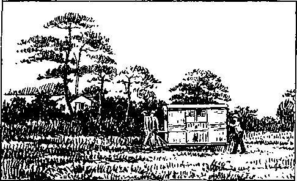

A JOURNAL OF FACT HOPE AND COURAGE
iiiiiiiniiiiiiiiimiiiiiiiiiiiiiiiiiiiiiiiiiiiiiiiiiiiiiiiiiiiiiiiiiii
in this issue
HAMAN VERSUS MORDECAI AFRICA
A CONTINENT IN THE MAKING OWNERSHIP OF WATERWORKS THE WAR DEBTS WORLD NEWS IN BRIEF OBEDIENCE TO JEHOVAH BRINGS PEACE
IlillllllllllillllllSllllllllllllllllllllilllllllllllllillllHIIIIIilllll
every other WEDNESDAY five cents a copy one dollar a year Canada & Foreign 1.25
Vol.XIV - No. 349 February 1, 1933
CONTENTS
LABOR AND ECONOMICS
One-Fourth of All Women Working 278
Relief Camps in Halifax . . . .278 Only One-Tenth Found Work . .278 Three Cents for Making a Dress . _79 Labor Camps in California . . . 289
Free Clothes for a Million . . .
Old Men Retain Their Jobs . . .
Relief Methods in Milwaukee . .
Free Milk in Uniontown .... ..SO New York’s Single Veterans . . 281 Real Depression Due in 18 Months 283 Present Disaster Unequaled . . . 283
Columbia U .Shows Capitalism Dying 2S3
SOCIAL AND EDUCATIONAL
Sun Life Assurance Company . . 275
Allspice.........278
PRR’s Bureau of New Ideas . . . 278
How Industrial Workers Met Death 278 50,000 Trespassers a Month . . .278 Free Street-Car Rides.....279
Basic English, a New Language . 282
Air Line Through Heart of China 281
Why They Found It Hard to Pay 281
POLITICAL—DOMESTIC AND FOREIGN
Uses of the Kenya Legisiature . 271
Police Not at Fault at Pekin . 275
Municipal Ownership of
Waterworks.......275
The War Debts.......276
Stirring Times in Taylorvii e . . 278
New York City’s Printing .... 281
Hunger Marchers at the Capital . 282
Business of the Munition Makers . 282
SCIENCE AND INVENTION
Longest Concrete Arch in America 279
San Francisco-Oakland Bridge . . 281
The Things That Are in Sight . . 283
HOME AND HEALTH
Aluminum Sauerkraut Path to Death 279
TRAVEL AND MISCELLANY
FINANCE—COMMERCE—TRANSPORTATION
Africa—A Continent in the
Making . . . '......263
400,000 Motor Boats......278
Prices of Wool........278
Helium Toys Imperil Skies . . . 278
Branch Plants in Canada .... 279
Lockheed Transcontinental Planes 279 Across Continent in 12.5 Hours . . 279 Lower Ocean Fares Did Not Work 280 International Barter on Huge Scale 280 Less Gasoline Being Used .... 280
Kingdom “Tanks" in Japan 272,273
Island of Tristan da Cunha . . . 281
RELIGION AND PHILOSOPHY
Anxious to Know Judge Rutherford........259
Note to Virgin Mary .... 262
The Radio Witness Work 232, 277, 287
Obedience to Jehovah Brings Peace..........284
Published e\ery other Wednesday at 117 Adams Street, Brooklyn, N. Y., U. S. A., by WOODWORTH, KNORR & COWARD
Copartners and Proprietors Address: 117 Adams Street, Brooklyn, N. Y., U. S. A.
CLAYTON J, WOODWORTH Editor E. J. COWARD Business Manager NATHAN H. KNORR Secretary and Treasurer
Five Cents a Copy—$1.00 a Year Make Remittances to THE GOLDEX AGE Xotiee to Subscribers: For your own safety, remit by postal or express money order. We do not, as a rule, send acknowledgment of a renewal or a new subscription. Renewal blank (carrying notice of expiration) is sent with the journal one month before the subscription expires. Change of address, when requested, may be expected to appear on address label within one month.
Published also in Esperanto, Finnish, German, Japanese, Norwegian, Polish, Swedish.
Offices in Otiier Countries
Biitish ............ 34 Craven Terrace. London, W. 2. England Canadian...........40 Irwin Avenue. Toronto 5, Ontario, Canada
Australasian ...... 7 Beresford Rd., Strathfield, N. S. W., Australia South African.........6 Lelie Street, Cape Town, South Africa
Entered as second-class matter at Brooklyn, N. Y., under the Act of March 3, 1879.
Volume XIV Brooklyn, N. Y., Wednesday, February 1, 1933 Number 349
Anxious to Know Judge Rutherford
uivrcC0MB’Miss-’Nov-19, i932-
JLV1 Editor, The Times-Picayune:
‘' I have always believed your paper worked for the very best interests of all our people. Especially do you uphold our schools and churches and labor to encourage relief for the needy at all times.
"For this reason I was surprised when I saw a big advertisement in your paper telling of a Judge J. F. Ilutherford’s books and speeches. I am sure he is opposed to Christianity and is working to help destroy it. Ue calls all churches, preachers and priests ‘workers in the Devil’s organization’. He predicts the certain and immediate downfall of all our religions and of our government.
"Of course, this must be old-time Russellism, but why do our papers help to put such blighting influences before the public unless there is more to back up such broad statements besides one ‘Judge’ Rutherford’s private opinion as to what is found in the Bible ?
"His insults and ugly slurs against Christians of all denominations should not be published that he might sell books. Isn't it time our papers stop featuring such ads? Our country needs encouragement, not direful predictions.
"Don't you think that our churches and schools are vital to our national life and anything or anybody who openly attacks them should be investigated? What sort of life would we have in our cities if our churches and schools should be suddenly destroyed?
"This pessimist Rutherford pretends to be the only person capable of interpreting Scripture, but maybe that is a ruse to put over his campaign against our churches. He knows his statement ‘that all Christians are hooked up with big business’ is not true. He also knows that the churches are the greatest factor for good and are of divine origin.
"He tries to explain away the fact of the trinity but has made a poor argument of it. I understand that the clergy ignore him. We have thousands of learned, godly men ‘pulling’ for our country and its needs; then why is such a pessimist as this Rutherford allowed so much publicity?
"In many of his papers he complains of the police in many places arresting his workers, but can he expect any better treatment for his insults to Christians? Please pardon me for this lengthy letter, but I am anxious to know more about this man who is so arrogant in his opinions. Does he give to the poor, the sick, afflicted, old men and women, orphans and the unemployed? Not a cent, so far as can be found out, but our churches give constantlv to all of these.
' " A. S. W.’’
An Embarrassing Introduction
We do not know that Reverend S. A. Williams, Osyka, Mississippi, was the writer of the foregoing letter, which appeared in the New Orleans Times-Picayune of November 20,1932, but there are reasons for thinking that he was, and so we have pleasure in introducing everybody all around. Copies of this will go to him and to the Times-Picayune, and to Judge Rutherford.
Introductions are sometimes embarrassing. The story is told of a Big Business man of New York city, years ago. He helped a beautiful woman on a street car and contrived to sit beside her and tried to engage her in conversation. Finally he said, “I will give you $20 if you will go with me.” She declined to notice him. That evening he was invited to the home of another Big Business man where he was exceedingly desirous of creating a good impression. The first person he was introduced to was the lady he had helped on the car. Confused and embarrassed, lie proffered his hand, but the lady said, icily, “I have met the gentleman before.'’
However, we proceed with the introduction. Mr. Haman, meet Mr. Mordecai. Mr. Williams, meet Judge Rutherford. And while you are about it, Haman, here is the halter, and you can head down the main street, shouting as loudly as you like, ‘‘Thus shall it be done unto the man whom the King delighteth to honor.” (Esther 6: 9) It will give you a better appetite for the feast which is just ahead. Judge Rutherford is in the saddle, and you are on foot, and the laughingstock of the community. You might as well know it now as later.
Best to Be Open and Honest
Surely you believe that the Times-Picayune is for the best interests of the people, an up-
holder of schools and churches and an encourag-er of relief for the needy, and the reason you mentioned it was to encourage them to publish your letter. It was in the nature of a canvass or sales-talk. It hoodwinked the editors of the Picayune not at all. They are accustomed to such preambles.
Every piece of bum poetry that was ever patched together was accompanied by a letter to the editor telling him what a great man he was, and what an excellent judge of fine poetry. The poet looks on that as really clever. He does not know that the editor has seen the thing done so many times that he is sick and tired of the whole sham. What, in his heart, he would at all times really prefer is that everybody should tell the truth.
It would have been a lot more of satisfaction to the editors of the Times-Picayune if you had come right out and said, “I am a preacher. Judge Rutherford has made us all angry by what he says about our hypocrisies, and I want to see if there is not some way in which we can get together and put up the fight over the radio that this man wants to make. Let’s have it out with him, so that the public can see who is right.” Then the editors would have had some respect for you; as it is, they can have only contempt.
Well, you saw the big advertisement that Judge Rutherford thinks that all the churches, preachers and priests are workers in the Devil’s organization. He doesn’t think it, Haman. He knows it. And, besides, the Times-Picayune was paid for the advertisement; they are not running the paper for their health. Now stop and think, for a minute. Suppose it is true that you and your friends are working for the Devil while pretending to work for God, isn’t it a matter of enough importance to be put in an advertisement in a newspaper? Why, really, it deserves to go on the front page as a big news item, the most important news item of the day.
You are sure that he is opposed to Christianity; the scribes and Pharisees were sure that Jesus was opposed to Judaism. The fact of the business is that Christianity and churchianity are as far apart as the east from the west. Jesus of Nazareth and Judge Rutherford have set to their seal that God is true and that His Word is now judging His professed people. There is not the least doubt where the judge stands. His position is well known. The New York Times, defender of and apologist for the Devil’s organization in its entirety, has made the public admission that he is the “uncompromising foe of Organized Christianity”.
It is now up to the much-diversified institutions that claim the title Christianity to prove that they are what they claim to be. If they are of the Devil, as Judge Rutherford claims them to be, it is of great importance to the people that the people get to know the facts.
How Do You Silence a Prophet, Anyway?
“He predicts the certain and immediate downfall of all our religions and of our government.” Listen! “There shall not be left here one stone upon another, that shall not be throwrn down.” (Matt. 24:2) Would you have had Jesus locked up because He predicted the ruin of the temple ? Listen again! “In the days of these kings shall the God of heaven set up a kingdom which shall never be destroyed: and the kingdom shall not be left to other people, but it shall break in pieces and consume all these kingdoms, and it shall stand for ever.” (Dan. 2:44) Do you know any way that the kingdoms can get together to prevent Almighty God from doing what He has said He will do ?
The Truth Is Not an Ism
“Of course, this must be old-time Russellism.” It is nothing of the kind. It is the truth, and the truth is not an ism of any sort. Pastor Russell knew much of God’s Word and made good use of what he knew. If alive today he would be cooperating with Judge Rutherford in the great work in which he is engaged. He did not have and could not have the truths that are specially due since 1918, but in his day he was as far ahead of the preachers of his time as a modern automobile is ahead of an oxcart.
You wonder if there is anybody backing Judge Rutherford’s “private opinion as to what is found in the Bible”. You have the evidence. There is hardly a place in “Christendom”, or in the world, for that matter, that is not getting his radio talks, and there are more than 130,000,000 copies of his books in circulation. You could see the hand of God in this if you were not stone blind.
You make a bid to the papers to stop running advertisements with which you do not agree. Seems like a good idea. All the publishers all over the United States and the world will have to do is to submit their business to you and you will pass on it, as to whether it should go in or stay out. Nobody but a preacher could have fathered such an asinine suggestion.
“Speak unto Us Smooth Things,
Prophesy Deceits.”—Isaiah 30: 10
“Our country needs encouragement, not direful predictions.” You bet it needs encouragement, but it has had Mr. Hoover right along now giving it encouragement by the barrel for almost four years. Every time he spoke it was to cheer the starving by telling them conditions were fundamentally sound, there was nothing wrong with the country, and better times were just around the corner.
The people have had plenty of encouragement; Judge Rutherford confines himself to the Scriptures and to the facts, and if you hang on to the halter, Haman, and make yourself at home at the feast later, it won't be long now till you will find out who is right. You want to know the judge? You are going to have a grand opportunity.
Putting the Shells into the Omelet
That was quite clever, putting the churches and schools together, and inquiring if they are not vital to our national life, but we will separate them, just as the government does. The churches are one thing, and the schools quite another and a different thing, and if you ask if the churches are necessary, the answer is that they are not. The proof that they are not is that more than half the people never darken church doors, and there are 40,000 churches that have been abandoned to the rats and mice that are now their only occupants. Jesus never had anything to do with the building of any of these churches, or with any of the churches, but He did hare a lot to do with the development of Christianity.
As to your inquiry regarding what sort of life you would have in the cities if the churches should be suddenly destroyed, the answer is that you would get rid of all the hypocrisy at one time, and there would then be a decent chance for the honest of heart to get together and worship God in spirit and in truth. Something like that is evidently in God’s mind. When the 213 varieties of churchianity go to smash, the people will have the truth in Judge Rutherford's books, which will then be their joy and comfort.
About this doctrine of the “trinity”. There are two reasons for feeling shaky about it. One is that it is nowhere even hinted at in the Scriptures ; and the second is that it was fathered by the Roman emperor Constantine in the same year that he murdered his own son.
You “understand that the clergy ignore him”. You know mighty well that they do; and you know the reason why, and so do we. But go along, Haman, don’t drop your halter; you would better hang on tight, for the feast and the day of reckoning is ahead, and the rope will come in handy.
Sure, you are right! The police in many places have done just what the Devil wanted them to do, and always at the behest of the clergy, his children, and if you had your way you would have every one of Jehovah’s witnesses slain so that they could never approach another door with the message of the truth, the message of The Kingdom the Hope of the World.
“God, I Thank Thee that
I Am Not as Other Men Are.”—Luke 18:13
As to your boasted gifts to the poor, the sick, the afflicted, the old men and women, the orphans, and the unemployed, who is it that puts up the money? It is the common people, is it not? And if it were not for the billions that have been filched from their pockets in the name of religion, and if the “principal of the flock” had been the Christians they have pretended to be, it is a matter of common knowledge that there would be no poor and no unemployed. And, anyway, how do your clerical friends and you know how many millions of copies of Judge Rutherford’s books have been given away to these classes? You don't know, and you never will know, and the reason is the following:
“Take heed that ye do not your alms before men, to be seen of them: otherwise ye have no reward of your Father which is in heaven. Therefore when thou doest thine alms, do not sound a trumpet before thee, as the hypocrites do in the synagogues and in the streets, that they may have glory of men. Verily I say unto you, They have their reward. But when thou doest alms, let not thy left hand know what thy right hand doeth: that thine alms may be in secret: and thy Father, which seeth in secret, himself shall reward thee openly.”—Matt. 6:1-4.
Here’s your halter, Haman. Be on your way. You are holding up the whole procession.
P.S. If the clergy of America were really honest and wanted the people to understand the truth they would pick out some man of national reputation as a preacher and put him up for the radio debate to which they have been challenged. Surely if they are for Jehovah God they could find one man who would meet these requirements. If they cannot, then they should admit that the god whom they serve is too weak to really meet an argument. The people are entitled to the truth, and they are going to get it regardless of the preachers.
A Note to the Virgin Mary
TAEAR Mary: We don't like to turn this ' over to a priest, to be sent to you by way of Vatican City, for there are too many crooks at both ends of the route, and you might not get it. No doubt you are a reader of 77/e Golden Age, so we address you direct.
We are just in receipt of a nicely printed four-page folder sent out by Rev. Joseph A. Skelly, C.M., Director, 100 East Price Street, Germantown, Philadelphia, Pa., in which he reports you as saying: “I am the Mother of the Poor Souls in Purgatory, for all the sufferings they have deserved are being mitigated every hour more or less by my intercession.”
Assuming that Reverend Skelly told the truth, we ask you frankly, Mary, What is the big idea? Why keep this hot oven or steam cooker going so steadily? And if you have any influence at all, why don't you use it once for all to put a stop to this infamous way of doing things ? You know that your Son once said, ‘Whatsoever ye would that others should do unto you, do ye even so to them.” Would you like to be parboiled in brimstone?
Reverend Skelly intimates that there is a way to get in your good graces if we will pay him 25c a year for anybody, living or dead. But why should we pay the money to him? That is the sticker. But hold. There is more to this. If we send 4 members, and don't forget to put in the $1, we get a silver-plated medal. Now, honest, Mary, is that medal silver-plated, or is this just one more line of bunk, of which the world is full to overflowing? If we send $2, $3 or $4, for 8, 12 or 16 members, we get a rosary, paper weight, or pendant.
Mr. Skelly ought to be all right, for we notice he says that he is “Approved by His Eminence Cardinal Dougherty, Archbishop of Philadelphia, and by His Excellency, the Apostolic Delegate”, but we have to call your attention to his statement that “Solomon’s Temple was empty of the Living God Who will dwell behind the tabernacle door in our Chapel. There the sacrifice of the Altar will be an infinite one, and God Himself both Priest and Victim”. That is plain blasphemy, Mary, as we both know.
Because you were a Jewess you are familiar with 2 Chronicles 7:1,2, which reads: “Now when Solomon had made an end of praying, the fire came down from heaven, and consumed the burnt offering and the sacrifices; and the glory of Jehovah filled the house. And the priests could not enter into the house of Jehovah, because the glory of Jehovah had filled the house of Jehovah.” And how about any human priest’s making the Living God his victim?
Mr. Skelly says, “I shall be quite satisfied with your prayers alone,” from which we gather that he does not insist we send him any cash; but the last thing in his advertising matter shows that he would not turn it down. He mentions a list of 123 things that he needs for the chapel, which include altar bells, cruets, missals, crucifixes, altar cards, candlesticks, altar cloths, credence tables, priedieux, sanctuary lamps, stained glass windows, altars and an organ, all footing up to a total of $70,281, which is quite a little wad for these hard times.
A lady who used to be one of Mr. Skelly’s flock writes us: “Rackets of this kind are worked frequently and heavily. A chap told me once that it was the best kind of selling and paid well. I don’t doubt. Most of the medals are composed of lead. Oh, well, why give the suckers a break?”
The Radio Witness Work
EUNICE, La. “I have been listening in on Judge Rutherford over station WJBO, New Orleans, every Sunday morning and enjoy his talks very much. I get many inspirations for sermons from his wonderful thoughts. I would like very much to receive a copy of The Golden Age magazine and also some of your tracts.” Rev. L. N. M.
Africa — A Continent in the Making In Four Parts — Part II
TRAVELING from Egypt westward along the top of the great head which we have imagined Africa to be, we come to the Barbary states, all of which, with the single exception of Tripoli, the least important of the lot, are in the hands of France. Tripoli was grabbed by the Italians in 1912. Prior to that time it was nominally in Turkey's hands.
Taken together, the Barbary states, Tripoli, Tunis, Algeria and Morocco, have an area more than three-fifths of that of the whole United States. The total population is about 13,000,000, of whom 1,000,000 are Europeans. Civilization there dates back thirty-five hundred years.
For centuries these states were a thorn in the side of the rest of the world. They have had an extremely checkered career. When all the rest of the world went Roman Catholic northern Africa remained independent. When the Saracens overran Asia and Africa they put all the Christians to the edge of the sword. Then these countries became solidly Mohammedan.
For three hundred years these lands were in anarchy. Their principal business was piracy. To gain a monopoly of the trade of the Mediterranean, England paid ‘'Barbary" $280,000 a year tribute. A part of this was always demanded in armed vessels, ammunition and naval stores, so that England really furnished these cutthroats with the tools wherewith the piracies on the ships of other nationalities were accomplished.
The time of settlement came when the Algerines captured two United States vessels and 21 men, who, as usual, were reduced to slavery while the question of their ransom was pending. Eleven of these died in slavery, and as a consequence Admiral Decatur raided the whole coast. Coming into Algiers he chanced to find the entire fleet at sea. He gave the high muck-a-muck, called the Dey, three hours to release all captives, of whatsoever nationality, and forswear all future tribute, or he would blow his village off the map. Subsequently he visited Tunis and Tripoli on the same errand and with like results. The next year the British government stopped paying tribute and made a similar trip.
The Berbers a Fine People
The Berbers, after whom the Barbary Coast gets its general name of Barbary, are a fine peo-2<»3
pie, thin, strong, robust, with beautifully formed bodies, and brown complexions. They often have light hair, and sometimes blue eyes. Mohammedans in religion, they are said to be generally straight and honest in their dealings, comparing favorably with the Arabs, and of high intelligence. They are of Semitic stock, remarkably industrious.
The Berbers are to be found along the entire extent of Barbary, 2,GOO miles from Egypt to the Atlantic coast, and 140 to 550 miles inland to the Sahara. The soil is fertile but light, and in the dry season, March to September, is so parched as to render walking upon it impracticable. The temperature is generally moderate, seldom descending to the freezing point and seldom becoming sultry.
The religious mix-up in Tripoli is well nigh complete. Moslems have their weekly religious holiday on Friday, Jews on Saturday, and the Italians on Sunday. Shopping may be done on any day of the week, but it is considered an insult to approach a Moslem on Friday, or a Jew on Saturday, with a view to making purchases.
A considerable part of the Barbary Coast, especially Algiers and Morocco, is traversed by the Atlas mountains, which in places rise to J 3,000 feet. The streams in these mountains are more or less permanent, but lose themselves in the light soil when they get to lower levels. Collections of water under the sand have been turned to account by the French by means of artesian wells. The general elevation is from 1,500 to 3,000 feet, but there is one large area which is 100 feet below sea level.
The French have made a great city out of Algiers. Its white houses, rising tier upon tier, present a very imposing appearance from the sea. The sea wall and warehouses cost upward of $40,000,000. The ladies wear trousers of white material, stuffed to make them almost as large as barrels. It is said to take a dozen yards of goods to make one of these pairs of trousers.
It is the discovery of radio that has really made the Sahara, which lies to the south of the Barbary states, penetrable. Here and there, all through the Sahara, are oases the exact locations of which in bygone years were known only to the Arabs. Now the French and the Italians
know where they are. By wireless, every one of these can keep in touch with governmental headquarters, and, if need be, in an hour, or two or three, any needed assistance can be sent by airplane. The Arab with his “ship of the desert”, the camel, is no longer in control.
And besides the radio and the airplane there is the automobile. In recent years some wonderful trips have been made by trucks and even light cars to various parts of the Libyan and Saharan deserts, and these have all helped to break down the former isolation.
You have heard of the Mauritania, and of Morocco, and of the Moors. The names are all of the same origin. The railroad across the Sahara, if it is ever built, will cross at about where Algeria proper ends and Morocco begins. It is the short cut to the Niger river, and the principal caravan route. France is too much interested in arming to the teeth to properly develop her railway transportation systems in Africa.
The French railroad across the Sahara would be only 1,050 miles long, and American railway engineers would not consider its construction a difficult problem. The “Great American Desert” is crisscrossed by railways, and now by airways, in every conceivable direction.
The rainlessness of the Sahara is due to the direction of the winds, which are deprived of their moisture before reaching these lands. But there are in the Sahara elevated plateaus and mountains with more or less permanent streams and habitable valleys in between, and artesian wells have been turned to account in Algeria.
The so-called “civilized” nations of Europe have not succeeded in entirely suppressing piracy off the African coast, though they have entirely removed it from the Mediterranean sea. Southwest of Morocco is the Spanish state or province of Rio de Oro, a penal settlement, and one of the most inhospitable places on the globe. It was to this settlement that the Spanish nobility were sent after the recently attempted insurrection.
While the Spanish are nominally in control of Rio de Oro, an area larger than New York, New Jersey and Pennsylvania, yet the district is not completely subjugated. In November, 1932, a fishing vessel off this coast grounded and was attacked by Moorish pirates. Only its radio apparatus prevented the vessel from being captured and its crew slain or held for ransom. An SOS appeal brought two ships to the rescue, one of which was a gunboat. The pirates were glad to beat a retreat.
The next point south, near the western extremity of Africa, is a very important one, because it was via the Senegal river that the French made their entry into the vast territory, larger than the whole of the United States, which go to make up French West Africa and French Equatorial Africa.
Until about fifty years ago the French did as all the other European nations: helped themselves to colonial territory here and there along the coast, with no apparent idea of linking their possessions up into one vast administrative area, but that is what has happened.
Going around the back of the head to the Congo river, at the back of the neck, the countries in their order, with the countries that claim possession, are as follows:
Senegal (French) Gambia (British) Casamanca (French) Guinea (Portuguese) Guinea (French) Sierra Leone (British) Liberia (Independent) Ivory Coast (French)
Gold Coast (British) Dahomey (French) Nigeria (British) Cameroons (French) Rio Muni (Spanish) Gabon (French) Kabinda (Portuguese) Congo (Belgian)
At the time of the World War the Germans had Cameroons, and a part of what is now Dahomey but was then called Togoland, making seventeen colonies in all on the Guinea Coast.
Back of these coast settlements is one of the richest regions of the world, viewed in the light of natural resources. The French were the first to appreciate the hinterland.
It was about 1885 that French settlers pushing up the Senegal river finally came over the divide into the magnificent region of the French Sudan, to the south and west of Timbuktu, and visions of the present great empire began to take form. Since then, the French have gone around back of all the coast settlements above named, cutting them off from further development, with the result that France now has in Africa a vast country, aside from the Sahara desert, which stretches from Algiers to the Congo river and from Cape Verde almost to the river Nile.
This territory includes much of the valleys of the Senegal, Niger and Congo rivers, as well as the streams that empty into Lake Chad, and the lake itself. Without a great fanfare of trumpets the French have quietly gone about the pacification and civilization of this great area, and though much remains to be done, much has been done.
In Dahomey the French have 1.800 miles of modern highways on which automobiles flit back and forth. The natives take to them as a duck to water. Like Jehu, they drive furiously. It was in Dahomey that in bygone years the French had to conquer an army of 15,000 Amazons, women trained for warfare, quite as strong as and more ferocious than men. Dahomey was at one time a great center of the slave trade.
In their conquest of the hinterland the French have had to deal with not less than fifty groups. They found some very extensive areas almost deserted, though only needing intelligent cultivation to support vast numbers of people. In other districts there is a dense population.
The Niger river, length 2,500 miles, rises within 175 miles of the Atlantic ocean, not far from the source of the Senegal river, and sweeps around a great semicircle back into the Atlantic. At the top of the immense circle, or rather we should say at the central point of the great arc described by the river’s course, in the center of a fertile prairie, lies Timbuktu, destined, in the future, to be a rival of Chicago. Immense and fertile plains and forests stretch away to the east and west and south ; and from this territory now come enormous supplies of oils, gums, ivory, and ostrich feathers.
Timbuktu is at the head of navigation of the Niger, and a natural collecting and distributing depot for the products of the region. For generations the Arabs have carried the products northward to Tripoli, across the Sahara, making two round trips per year. Now the French take their goods out by way of the Senegal, or down the Niger through British territory. They have a railway across the Niger-Senegal divide.
If the trans-Saharan railway is ever built, these goods will go direct to Algiers. Planes make the hop across the desert frequently, and no doubt a through line from Britain to South Africa via this route will come soon. The planes usually follow the Greenwich meridian, and meet and leave the Niger at Gao, 200 miles east of Timbuktu; so Gao may finally be the big city.
Palms are to be found all over Africa. The date palm is the special characteristic of the desert, to which it is specially adapted, and in which it forms the principal means of subsistence. The Arabs, who make a living by carrying ivory and other treasures across the desert, carry dates with them as their sole food, counting out just so many to be taken at each meal, and not varying the number. They know in advance, to a certainty, how many meals they have provided for. In the western part of tropical Africa coffee plants thrive so luxuriantly as to form thick woods.
In the vast areas under their control the French have discouraged cannibalism, but it will be some time yet before it is extinct. Slavery is waning. Fetishism is greatly decreased. Some of the secret murder societies have been broken up. Tribal wars are at an end. Polygamy is much decreased. The people are learning to read and write; soon they will be like all the rest of us, but maybe not quite as bad.
The Hausa Negroes of the French Sudan and upper Nigeria are said to have the most beautiful language of the world. It is said that these Negroes themselves are as stately as their language, which is spoken by some 20,000,000 throughout the Sudan and as far as the Mediterranean. As slaves they were prized as of the highest type. They are crossed with Semitic stock and are Mohammedans, mostly.
The Sahara desert is not entirely rainless, though it averages under ten inches a year. The northern part of the Sudan has from ten to twenty inches a year, and this belt stretches clear through from Cape Verde on the Atlantic to Somaliland on the Indian ocean; it is perhaps a hundred miles wide. South of that is a great belt approximately 500 miles wide, the bulk of which is in French hands, which has up to sixty inches of rain a year and will grow anything that can be raised anywhere. The heaviest rains of all, ranging up to and over 120 inches a year, are in the heavy-forested Guinea Coast and Congo regions, much of which also is in French possession.
The reason the Guinea Coast is unhealthful (aside from the intense heat and humidity) is largely that the people there do not know how to live. The natives suffer terribly from constipation : they eat no greens ; they know nothing of sanitation; they do not know how to secure pure drinking water. Is it any wonder they are ill? When sick they go to a medicine man for some magic brew or incantation. We have not heard of any of them as being so superstitious, however, that they think that by having poisons scratched into their arms it will keep them from getting sick.
There are sacred groves where, occasionally, without the knowledge of their white rulers, young men are sacrificed, Tor the good of the tribe,’ but we have not heard that any of these benighted savages teach in one breath that God is love, and in the next declare He purposes to roast almost all humanity in the strangling fumes of burning sulphur throughout all eternity for something that somebody else did more than six thousand years ago.
Snake stew is a savory dish on the Guinea Coast. The odd thing about it is that it is said to taste very good indeed.
The breakers on the Guinea Coast are the most dangerous on the continent. There is a constant westerly swell from the Atlantic.
All three of these are considered unhealthful, owing to the great heat and humidity. Obviously, the people need a light, thin diet, if they are to keep well. In due time, if they do not have them now, residents in such climates will be taught the real value of oranges, lemons, limes and grapefruit.
Gambia is small, hardly the size of Connecticut. It is a British possession consisting of a strip of land six miles wide on each bank of a navigable stream 250 miles long. Surrounded on all sides by French West Africa it is like a sliver or wedge driven into the French possessions.
Portuguese Guinea is of the size of Massachusetts, Rhode Island and Connecticut. There is an archipelago of islands off the coast. There is still much big game, elephants and hippopotamuses being common.
Sierra Leone is a British possession, and though it looks to be but a speck on the map of Africa it is larger than all of New England outside of Maine. It has magnificent forests; some of the trees, hollowed out by the natives, are converted into canoes capable of containing a hundred men.
On December 31,1927, 250,000 Negro domestic slaves were given their freedom in Sierra Leone. Slavery is a curious institution. It seems to be almost indigenous to Africa. Every white family has about six servants, or “boys”, as they are always called, regardless of age. There is a cook, who does nothing but cooking; a laundry boy who does laundry work, and nothing else; a house boy that elsewhere would be called a butler; a pantry boy, who looks after the food; and a toto or kitchen boy who does all the work. Twenty or thirty dollars a month secures the services of the whole six.
The native chiefs try to imitate the whites, and as they do not have the necessary twenty or thirty dollars a month to pay the help, they make them serve without pay. In Africa it is called slavery. When freed, many of the Sierra Leone slaves refused to leave their old masters.
It is but natural that Africans and others who know of the riches of Africa, and who realize the adaptability of the black man to its climate, should think of the possibility of repatriating upon its shores the millions of blacks who are now in America and the West Indies; but the experiment in Liberia shows that the thing is impractical.
With the best of motives, Liberia was founded early in the nineteenth century for the purpose of colonizing free blacks from the United States. By 1845 about 4,500 had been sent over, and in 1847 these declared a republic in which the people of the United States have always had the friendliest interest. Only persons of Negro blood may be citizens.
In 1877 there was a determined effort to send additional colonists. A stock company was formed. An old boat was bought; and thousands sold their belongings, with the expectation of going on the initial trip. The boat was legally permitted to carry 206; but when sailing time came, there were a thousand on board. Hundreds were sent ashore in rowboats. The food ran low, and so did the water supply. Twenty-one were buried at sea in ten days. At length Africa was reached, but both natives and newcomers were disappointed, and many of the newcomers died. The boat got back to America and never made another trip.
It is most regrettable that the 20,000 Afro-Americans allowed themselves to be dragged down by the wretched examples set on all sides, particularly their next door neighbor, Sierra Leone. In 1930 a report to the League of Nations showed that slavery is rife throughout Liberia, even in the families of Afro-Americans.
In the effort to prevent the truth from coming to the light, hundreds of natives were slain and their villages burned, but the truth came out anyway. The president and other high officials resigned, and Liberia is now being run under an advisory council of the League of Nations, the United States cooperating.
The League of Nations has proposed a dictatorship for Liberia, as a result of recommendations made to it by an International Committee which includes representatives of the United States, Great Britain and France. The dictatorship would be financed by the Firestone Rubber Company, which would therefore, in effect, be the real ruler of the country.
Slavery in Liberia took the form of pawning. Men and women were pawned as children, and subsequently repawned, with no hope of redemption remaining. Villages were terrorized and depopulated to recruit forced labor gangs, some of which wore shipped to French and Spanish colonies. Forced labor for public works was diverted to officials’ private plantations. Liberia, within the past year, has freed its slaves and paid its war debt to Uncle Sam in full.
In 1925, Harvey Firestone, Akron, Ohio, announced that the company of which he is president had purchased 1,000,000 acres in Liberia and would invest $100,000,000 in rubber plantations. By 1929, 30,000 acres had been planted with Sumatra rubber trees and 10,000 Liberians were on the pay roll.
The cost of living in Liberia is so low’ that the people demand a smaller coin than the cent, ■which is the present smallest currency unit. It is pointed out that, in buying food daily for her family at the markets (most of which food will not keep, owing to the climate), a native woman frequently needs of different things only quantities which are valued at one-tenth or even onetwentieth of a penny.
One of the most successful colonies anywhere in the realms of the British Empire is the Gold Coast. This country, which is of about the size of Maryland, District of Columbia, Virginia and West Virginia, is the cocoa center of the -world. The crop is grown entirely by natives, and is of the value of $50,000,000 a year.
The Gold Coast has a new harbor costing over $17,000,000, in the construction of which more than two million tons of granite were used. Five thousand miles of fine roads have been built, of which mileage 3,500 miles were built by the natives. The natives enjoy and freely use the buses, which race from one end of the country to the other.
The natives of the Gold Coast believe that the Devil is so hideous that if he sees himself in a mirror he immediately runs away in terror of his own ugliness. Mirrors are therefore something they much appreciate. If you have plenty of mirrors around your house, if the Devil comes in and gets a look at himself, away he goes before you can say Jack Robinson. These poor’ Africans cannot imagine a Devil so hideous that he would stand up in a pulpit and warn the people not to read any books that would tell them anything about God's kingdom. The Devil is much worse than they think.
The Gold Coast is really a “gold'’ coast. Besides cocoa, it has gold and diamond mines, palm oil and mahogany, manganese and rubber, with over 2,000 vessels clearing its ports every year.
The great state of Nigeria was very completely described in these columns in our issue of May 15, 1929, which please see. We here merely mention a few items. This country, stretching from the mouth of the Niger river to Lake Chad, on the border of the Sahara, is surrounded on all sides by French possessions, but is in itself as large as all of the United States between the Hudson and Mississippi rivers and north of the Potomac and Ohio.
The trade of Nigeria is monopolized by The Niger Company, which has the exclusive right of importing rum, gunpowder, missionaries and other blessings of civilization, and exporting the products of the country. The missionaries have confirmed the natives in their heathen beliefs that the dead are more alive than ever. Pagan ideas are thus perpetuated.
Negroes in the northern part of Nigeria must still take off their hats in the presence of Europeans. If they do not take them off they are knocked off. lentil recently they were compelled to prostrate themselves on the ground as the white passed along.
Lagos, one of the principal ports of Nigeria, was once a great slave mart. As the British gained access to the country, they used one tribe to kill off another, thus saving the British troops. This is a standard, recognized method of the British Empire in gaining control of a land.
Before the advent of the British, parts of Nigeria were better governed than they have been since. The natives, as they have come in contact with European civilization and hypocrisies, have fallen away from previously high standards. This is especially true of northern Nigeria, the Mohammedan rulers of which, the Fulani, crossed into Nigeria from the Nile in the twelfth century.
The native clergy are a nuisance, perpetuating the “Hell” scare, and collecting “dues” from the people on one pretext or another. A church funeral cannot be had unless all one’s “dues” are paid, and the native clergy have fostered the idea that without a church funeral there is no salvation. Three-fourths of the people are still pagans; in the north they are largely Mohammedans.
Demonism is rampant. Some of the rites are so secret that if any female by accident chances to observe them, she is put to death. Polygamy is common. Some of the natives believe in reincarnation and have the thought that man is living this life over and over again, being born again in the person of a babe after passing into death at maturity.
Nigeria is in its infancy. It is of vast natural resources. Its tin, lead and iron ore industries are old and valuable. Railroad development has been rapid, because of the mines, the mileage in 1930 being 2,069. Slavery was abolished in 1917. There is a tremendous future ahead of Nigeria. It is on the direct air line from England to Cape Town.
In 1929 Nigeria was treated to a revolt of women. Counted for the first time in a census, they thought they were going to be taxed, as their men had been after they were first counted. They thereupon attacked government offices, looted European traders, and wrecked a bank. Fifty-four of these women were slain in the quelling of the revolt.
In the hill country of Nigeria the villages of the natives are built in a circle, all the huts facing the center. Construction is of mud, with straw thatching for the roof. Herodotus mentions the Niger river, a great stream across the desert, where some young men of the Tripoli coast saw crocodiles and black men.
In the Nupe district of central Nigeria salutations are most elaborate. The local king is saluted as “Lion”. The local prime minister is addressed as “Elephant” and “Camel”. The people, when they meet, kneel in front of one another and, instead of shaking hands, touch the tips of one another's fingers, returning the hand to the breast as a sign of fidelity and friendship.
Says a writer in the New York Times:
Two men meeting on the road would proceed to salute each other as follows: “How are you'?'’ “I thank God I am well.” “Are you up already?” ‘‘Yes, thank God.” “Did you sleep well?” “Yes, praise the Lord.” “How are you?” “I am well.” “Is your house well?” “Yes, they are well.” “What is the news?” “I have none.” “Is your house well?” “We are all well.” ‘Lire your children well?” “Yes, thank God.” “Your wife well?” “She is well.” “Any news?” “None.” “Good morning.”
Then the other party takes the lead and asks the very same questions. It is a common thing for a man to say, over and over again, that he and his wife and children and relations and property are all well, and then when the formal greetings have ended, to begin to relate how his child is sick, his horse dead, his wife left him, his crops a failure, etc. He must go through with the formal salutations first before coming to realities.
The French feel much elated over their possessions in Africa, especially over French Equatorial Africa, which is a stupendous country, larger than the whole of the United States east of the Mississippi river (with Louisiana and Arkansas thrown in for good measure), and which is known to be laden down with riches of every sort.
Though held tightly in the grasp of the greatest military power in the world, it is so great in area, and so complex in peoples and resources, that it has been hardly more than touched. It was entered and seized by way of the Congo river and its tributary, the Ubangi.
At the big bend in the Ubangi the French started and built a line of forts through to Lake Chad, five of them, and from these, as centers, the whole northern part of this vast area was brought under their control. Telegraph lines were installed to outlying points, and now the wireless, and the result is that what was a generation ago a land of cannibals was recently crossed from the Nile to the Niger by a motor truck engaged in making motion pictures of African wild life.
Paul L. Hoefler, leader of this so-called “Colorado African Expedition”, wrote a book entitled Africa Speaks, in which he says in one place:
Into this enchanting country I carried a motion picture camera and a typewriter. Before my eyes, the gentle antelope came to drink, immense herds of game pounded over the plains, millions of flamingoes winged over a remote lake, the prehistoric elephant and rhinoceros ambled through the torrid heat, the strange disk-lipped women passed in parade, the little people of the great forest pranced to the rhythm of their drums, the lion stalked his prey, and the ebon warriors with spear and shield met the king of beasts in hand to claw combat.
Yes; there arc cannibals in French Equatorial Africa, in some places. And the worst of it is that some of these cannibals are said to be fine fellows to meet. They are very pleasant, but they are fond of meat, and fresh meat is hard to get in the tropics. Some of the tribes buy prisoners of war, holding them in reserve, killing and eating them as they are needed. Others eat only their enemies; others eat only because they wish to assimilate the strength and other good qualities of those that have passed away. It is all very hideous, almost as much so as the diabolical doctrine of eternal torture believed by some savage whites in America and elsewhere.
Like his white brother, the African native has often been deceived by demons. As in America, the black brother in Africa is easily misguided and misled; but for the most part he is an intelligent, simple-hearted, inoffensive man.
A writer in the New York Times gives some of the details of the form of demonism called lycanthropy, which the French have been trying to root out of their African possessions. The same occurs occasionally also in territory under the British flag.
When the Negroes of old, overwhelmed by a natural calamity, sought the aid of the wizards, they were told that they must, propitiate the angry deities. Tenga, the earth god, demanded a sacrifice. The wizard would go about the countryside, peering into every hut in search of a human offering to the god, while the Negroes quailed in terror. Sometimes he would have the girls and the boys cast lots. The chosen one would then be bound and carried into the woods where, under a sacred tree, he would be killed, his blood being offered to the earth, his body silently devoured while the wizard murmured incantations.
Even today the wizard casts spells over his victims and makes them do his bidding. Selecting a person susceptible to his hypnotic powers, the wizard takes him on a dark night to a spot made mysterious by awe-inspiring legends. lie throws over him the hide of a panther, smears his body with odoriferous ointment, makes him drink a magic beverage, stares into his face and says, “Now you are a panther. The people I point out to you shall be antelopes. You will kill them and bring their bodies here.”
Such commands are carried out.1 Parts of the bodies are then wrapped in leaves and distributed over the district suffering from flood, famine or sickness. Magic formulas are spoken and the human offering is eaten.
Such atrocities have become infrequent because of the influence of Europeans. But on an island off the Guinea Coast I saw a prison settlement containing twenty-four “women panthers”. Under the influence of a wizard, they had killed their own children to ward off famine. Only one of these women remembered precisely what had happened. The others replied at the trial simply that the wizard had turned them into panthers and that they could not recall their actions thereafter. These women were sentenced to life imprisonment. The male cannibals are usually shot, going to their death coolly, not understanding in the least why thejr are thus punished, confident that they have been true to their god and will be rewarded with immortality.
After the World War the French took over the German Cameroons, which comprise onesixth of what is now French Equatorial Africa. It has a rainfall of 369 inches, or more than thirty feet, a year. In this part, which is four times the size of the state of Pennsylvania, python worship is common, the people believing that the souls of dead people of high rank visit their relatives in the form of snakes.
Sleeping sickness, spread by the tsetse fly, has ravaged portions of French Equatorial Africa and given the French medical fraternity much concern. Another thing that gives the French doctors plenty of concern wherever French soldiers go is what is known in Africa as ‘the Frenchman’s disease’, syphilis.
One whole tribe migrated from the healthful highlands into the notoriously unhealthful lands near the mouth of the Congo, in the hope that they might all die, on account of the ravages of liquor and of this white man’s disease in their midst. Instances are of record where these poor natives have walked four hundred miles to a hospital for treatment.
It is believed that the women of the Sara Ky-abe tribe, French Equatorial Africa, would be the finest looking in all Africa but for the disks, often eight inches in diameter, which are inserted into their lips. The Sara Kyabe women used to fetch the highest prices on the slave market, and to preserve the tribe the elders decided the women must all be disfigured so that they would not be wanted as slaves. The French are putting an end to the barbarous practice. This last season some of these poor things were exhibited at Coney Island, Brooklyn, N. Y., U. S. A.
Some of the poor natives are so low’ in superstition that they believe they have descended from the monkeys. In America and Europe we have college professors and doctors of divinity that are Just as low7. The poor ignorant natives and white college professors notice some points of similarity in the shapes of the physical frames and ignore the vast differences, and have no more sense than to make a D.D. conclusion.
Fernando Po, an island the size of Rhode Island, twenty miles off the coast, at the big bend in the Gulf of Guinea, has had quite a checkered career. The Portuguese ow ned it once, the British once, and the Spanish tw’ice. The British abandoned it on account of its unhealthfulness. It is one of the most fertile spots on the African coast. The Spanish have used it as a penal settlement. It has a mountain over 10,000 feet high. Immediately opposite, on the African mainland, rises Cameroon mountain, 13,350 feet high. The ship channel passes between these two high peaks, in plain sight of both.
Spanish Guinea, or Rio Muni, is a Spanish settlement larger than New’ Jersey, surrounded on all sides by what is now French Equatorial Africa. Spain has given France the right of preemption in case of the sale of any of her African possessions.
Kabinda is a Portuguese settlement, considerably larger than the state of Delaware, located just below French Equatorial Africa and just above
The world has never had a greater explora-tional thrill than it received in 1877 w’hen Henry M. Stanley emerged at the mouth of the Congo liver, the only white man to survive the first trip across Africa by this route. With his faithful blacks from the Zanzibar coast, he came 3,750 miles down a river no w’hite man had ever before seen, except at its mouth, and thus charted the route which opened up Darkest Africa, land of cannibals and copper.
The publicity attending the discovery of the Congo led in 1882 to the founding of the Congo Free State, a district as large as all that portion of the United States east of the Mississippi river. Probably a third of the whole is under dense and almost impenetrable forests, but the great river system, aided by railroads around the falls and cataracts, has made possible a marvelously rapid development. It is under Belgian control.
Nothing else did so much for the Congo as the discovery of the Katanga copper belt, 250 miles long by 25 to 50 miles W’ide, in the very heart of the continent. Railroads reach these mines from the east, the west and the south. To the north there is connection with Lake Tanganyika and the Congo; and from the Congo, at Stanleyville, there is now a motor road to the head of navigation on the Nile. Buses carrying the mails take five days to make the trip. Their route is right through the center of w’hat Stanley described as “Darkest Africa”.
It must all seem very strange to the poor heathen cannibals to have their country invaded first by one white man and then, within a generation, to see the white man everywhere, in steamers on the rivers, in railway cars and automobiles on land, and in airplanes overhead, and they find that if they kill and eat one another, as they used to do, the white man sends and gets them and, for some reason which they do not understand, puts them to death.
The northeastern Congo region is the home of the tallest, strongest men in the world, the Watussi tribe, w’hose medium height is six feet, and who often attain to seven feet. It is believed by travelers that these forest giants can outrun and outjump the trained athletes of any other people. Curiously, they live in proximity to the shortest men in the world, the Wambutti pygmies, made famous by II. M. Stanley.
This close relationship of giants and pygmies fairly w’ell illustrates the relationship of blacks and whites to the problem of the development of Africa. It is essentially a black man’s country, essentially an indolent man’s country, because it contains such a store of easily obtainable food, and because the bulk of the natives are and always will be Africans.
The Wambutti pygmies, or the Ifi, as they are called in their own country, dwell in the Ituri forest, near Lake Tanganyika. They are yellowish brown and seem to be of Semitic rather than Negro stock. The women are comely, and the men, though small, are very muscular. They kill the mighty elephant by creeping up on him while he is sleeping, hamstringing him so that he cannot rise, and tinally dispatching him with a myriad of spears. The Ifi do no work; their wants are few and the forest supplies all their needs.
The use of Negro labor in the Katanga mines has shown that the Negroes need more food when they are compelled to do hard work for a living than when they live as they did for ages past.
More than half of the men recruited from some districts for work in the Katanga mines never reach their destination, because of disease or desertion. On reaching his place of “employment”, the native, separated from his family, and obliged to live in a compound with large numbers of other men, falls a prey to epidemics. Sleeping sickness has destroyed nine-tenths of the population in some districts. The Europeans have brought the natives syphilis, tuberculosis, dysentery and Spanish influenza, which previously they knew nothing about.
In the Congo, as late as 1926, thousands of men, old ones as well as younger ones, were shipped about by the administrators with ropes around their necks. Sometimes they are sent for a thousand miles. Neither these men nor their families understand the difference between the old-time slavery and the modern “employment”. When a labor recruiter for the mines at Katanga comes to a district the natives flee as at the approach of a slave trader.
When “hired”, the natives have to work for one year, during which time it is a criminal offense to desert. Imagine the conditions in any home where the father is compelled to work away from home for an entire year, and perhaps at a distance of a thousand miles. In such homes the children are undernourished and the women are a prey to the men that are left behind.
During the two rainy seasons, October-December and February-May, everything in the Congo region gets wet. There is no keeping the rain out. No rain-proof garments work against the combination of heat and wet. Mails are sometimes undecipherable, because the mists penetrate the mail bags and reduce everything to pulp.
During the rainy season the Congo river carries such vast quantities of soil that its color is a muddy brown. Before the water can be used for washing purposes, it must be treated with permanganate of potassium, which turns it blood color.
As in Australia, the ferns grow to the size of small trees, being often twelve to fifteen feet in height.
In the volcanic region of the Congo, the Parc National Albert, comprising 780 square miles, has been set apart wherein gorillas may bum around to their heart’s content. The gorilla is the hobo of the animal world. He travels in groups of two to thirty-five individuals, making a new nest every night. These nests are often forty feet from the ground. Occasionally, a gorilla falls out of bed at night, but is never hurt by the fall, and, as a matter of fact, usually catches a limb when part way down and in a moment swings back up into bed again.
(To be continued)
Uses of the Kenya Legislature
WE HAVE sometimes wondered what are the uses of a white legislature in a country that belongs to black men, but now we know. Gold was discovered in a district of Kenya, British East Africa, in a section which was reserved for the blacks. Thereupon the Kenya legislature “passed a law” that will permit the working of this ground by white men and providing for the removal of the natives to other lands. That’s simple. If your neighbor has something that you want, what you should do is to “pass a law” ousting him and turning the property over to yourself, your heirs, administrators and assigns. And the more legal words and phrases you have in the law, the better it will look when it comes up in court.
LIKE its predecessors, the International Bible
THE SMILING JAPANESE TROOPS
Students Association 1933 Year Book is a compendium of up-to-date information regarding the most important work in the world, the proclamation of God's kingdom, now under way intensively in every corner of the earth, including Japan. Most of the Japanese who receive the truth straightway make obedience to it the object of their lives. They give up all for the privilege of being associated with Jesus in the present work of magnifying God’s name in the earth and proclaiming the onrush of Armageddon, which will fully vindicate it.
Readers of the 1933 Year Book, therefore, noted with peculiar interest the following unique
ON THE MARCH
paragraph in the report to Judge Rutherford from Tokio:
TANKS: In Japan it is very expensive to have an automobile. The roads in the country district are very
bad. At the same time we do not need to have an automobile, because mc can reach the next village within an hour. So we decided to build “tanks” without an engine. Three “tanks” will be built, and one of them is nearly completed. Each “tank” has three man power, not horse power, on foot; and is eight feet in length, four feet and one-half in width, and six feet high. In this car three pioneer brethren can sleep, study, cat, cook and meet. Now any remote district can be reached by these tanks. It is built with iron pipes and sheets. Entire cost of each tank is less than $30. All the building of these is done by the brethren.
FACING THE FOE
A later report furnishes photographs of one of the “tanks’’ completed and in use, with sketches containing additional details. We reproduce some of these herewith. In effect it is a large handcart, mounted on two wheels, with its body underslung so that its base is not more than one foot from the ground. When in motion, two or three do the pulling, while one gets behind and pushes. When at rest, the bulk of the weight is supported by the two wheels, which are centrally located, while the craft is kept in balance by trestles or tripods at each corner.
The lower deck of the car is given over to storage of books, booklets and tools, and is evidently of carton height. At night a mattress laid atop these cartons, or on a deck above them, makes a full-sized bed for two, but large enough also for a child to sleep between its parents. Two canvas beds, hung from the ceiling, make room for two more, so that, on a pinch, the “tank” makes a place of rest for live persons.
While on the march, the tent, which at night shelters the whole “tank” and the outside kitchen and garage, is rolled up and carried in a rack on the roof. In the garage are kept the bicycles which are the actual instruments of delivery and afford other useful transportation. The heart of the kitchen is an oil burner, attached to the outside of the “tank’’ on the side opposite the garage. There is a water tank beneath the deck on which the books and tools are carried.
The “tank” is amply ventilated, with single windows at top and bottom in front, doublewidth windows equipped with blinds, on either
side, and a full-height door in the rear, with a window in its top. The height inside is sufficient for persons of ordinary stature to stand up. The total space available for sleeping purposes is approximately that of a Pullman section.
Hangings at the entrance insure privacy to the occupants of either berth. It must take good gymnasts to get into the upper berth, but the Japanese are famous for that.
The finest thing about this new-style conveyance, at once apparent from the pictures sent, is the happiness of the workers, their joy in the Lord. A broad smile on every face shows their heart satisfaction at having a share in the Kingdom work.
Because we know it will be enjoyed and appreciated we give the letter to Judge Rutherford which accompanied this information, in just the language in which it was received. If you feel you could improve a little on Nishino’s English, maybe he could improve somewhat on your Japanese, so you are quits.
In a footnote Nishino says, “We eat many fishes. Snow is seldom in this place in winter.’’ He also mentioned that the storage space takes four or five cartons of books, and the whole “tank’’ weighs a ton or more.
Now don’t you wish you were a Japanese man or woman just coming to a knowledge of your Kingdom privileges and could get hooked up with one of those “tank” parties ? But maybe where you are there are opportunities equally good and not calling for quite as much of the strenuous life. How about it?
Greetings to the name of our King'!
Bear Brother Rutherford:
T think you heard the news from Japanese office staff Brother Akashi already; that is, the Lord gave us three convenient dwelling cargoes built by the hand of our brothers. I send the gladness of service to you from this No. 2 Tank-, that witness the name and the word of the Most High, through the Praise Testimony Period at tqwns and villages near Tokio bay.
Now the inflation policy of the Saito cabinet is completely unsuccessful; hence Japan-China emergency peoples turning to Nationalist and say the only one living god is our emperor “Mikado’’.
Many religious preachers guide the ignorants to dark, and make many atheist. In such condition Lord blessed us: 800 booklets, 3 bound books and 280 Golden Ages are distributed by hand of No. 2 Tank pioneers (four members), to wit, I and three other brothers. Thus by and by they know the name of true God.
Now we are marching on as Jehovah’s witnesses along the Tokio bay to the south proclaiming the message from our King.
Here this place is very important as strategical. Many officers rebuking the Sir Lytton’s information and mocking each other the exertion of the League of Nation.
It is very interesting to tell the Kingdom gospel, especially the desirable New Government.
AFTER THE BATTLE
We arc now studying the “Jehovah’s Executioner” by Brother Akashi reading the new issue Watchtower, and it encourage us much, for the final battle of Armageddon is very near, and at hand.
I am waiting and hoping the first coming of you to Japan. The grace of our Lord Jesus Christ be with you. We send much Christian love to the office and Bethel family.
1932
Nov. 29
Always your servant,
T. Nishino
Sun Life Assurance Company of Canada
SO STARTLING were the charges against the president and directors of the Sun Life Assurance Company of Canada by The Journal of Commerce of Gardenvale, Quebec, that we reprinted extracts in a recent issue. It was unknown to our Canadian correspondent that at that time the editor of The Journal of Commerce was under arrest for criminal libel. The publication in question is printed at one of the suburbs of Montreal and is owned and edited by one, J. J. Harpell, recently sentenced by Chief .Justice Greenshields, in the Court of King's Bench at Montreal, to serve three months in jail, bound over to keep the peace for a year or serve a further six months, and was also condemned to pay the costs of the prosecution.
The chief justice characterized Harpell as a dangerous man and declared that he had failed to prove the slightest justification for the publication of such atrocious libels. In fairness to the officers of the Sun Life of Canada we reproduce the remarks of Chief Justice Greenshields when he sentenced Harpell.
Harpell, upon a complaint of Thomas B. Macaulay, you were arrested on a charge of criminal defamatory libel. After investigation before the magistrate, a commitment to this court intervened. The grand jury found a true bill and upon that you were arraigned. You exercised your rights quite properly, and to the fullest extent. You filed a plea of not guilty, which is the general denial of guilt. Then, with or without the permission of the court, it is a matter of indifference, you were permitted to file a special plea, and this is what you said: “What I said concerning the complainant is true, it is true in substance and in fact, it is true in its entirety, and it was in the public interest that I should publish it.” And then you proceeded to add pages of plea which I must admit I had some difficulty in understanding, which you called a plea in justification. Whether it was a plea to substantiate the truth of your libel or whether it was allegations in support of the statement that it was in the public interest, it is very difficult to decide. I was and still am of the opinion that at least two-thirds of that plea was absolutely unfounded in law, and since the hearing I am convinced that if the plea had stood as it originally was filed, the result in law at least, if not in fact, must have been absolutely unsound.
Now, the trial took place before twelve of your peers, and probably four days or five were occupied with your defense, and your whole defense naturally went to establish tlie truth of this libel.
Somewhat startling, somewhat at least to my surprise, you entered the witness box and, without a question from your counsel or any othei' counsel, you volunteered the statement, and said: “Yes, I said he was a crook. I meant by that that he was a thief; I meant by that that he was a swindler; and he has been a crook, a thief and a swindler for 25 years, and he still is.” That is what you said in the box.
It was not particularly attractive, and it was somewhat startling. You absolutely failed in one scintilla of proof in your attempt to prove that the complainant was a crook or a thief, much less a swindler.
Now, I have to pronounce sentence. You were found guilty. The jury recommend you to my clemency, mercy. I never inquire into the motives which actuate a decision of a jury. I never should. And I have not yet solved what seemed to me somewhat strange, upon what grounds they attached this recommendation to mercy; whether it was the manner in which you gave evidence, or consideration of your mental control, I don’t know. It is sufficient for me that they did recommend you to mercy, and it will receive due consideration from me. The pronouncement of sentence on convicted persons is often difficult. It is never agreeable, and is sometimes highly disagreeable.
I want you at least to understand this, and it is to the great credit of our English law. Vengeance has disappeared from any consideration in the economy of the criminal law and its administration. I must not and I will not allow the thought of vengeance to enter into any consideration in the pronouncement of my sentence. The old lex taliois, an eye for an eye, a tooth for a tooth, has entirely disappeared from our criminal law. The law considers two things in this country, the remedial effect on the prisoner, on the guilty one, and the protection of society.
The man who publishes in his own paper or secures the use of another paper to publish grossly defamatory libels of and concerning his neighbors is a dangerous man; not only does he injure the person defamed, but he is liable to create a disturbance of the peace.
Now, you had no justification, not the slightest justification, for the publication of this atrocious libel against a man who has occupied an honorable position, an honorable and successful business position, in Montreal for well nigh half a century at least.
I have given this matter my deepest consideration. I have spoken longer than I usually do in pronouncing sentence. My experience has been that lectures to prisoners are utterly useless. I have reached the conclusion, to impose sentence of three months in jail. The limit is twelve. I will impose no fine, although I might impose a fine of $200 concurrently with the imprisonment.
Harpell, I want to stop this. I want it to be stopped. And I order you to enter into a bond of recognizance that you will keep the peace for twelve months, and you will enter into that bond during the period of three months while this sentence runs, and if you fail to enter into that bond to keep the peace and preserve the peace, then there will be and there is an additional sentence of six months in jail.
Now, you understand? You enter your personal guarantee, and you will accompany it by a guarantee of some bondsman for $1,000, that you will keep the peace for one year. And I condemn you to pay the costs of your prosecution. I have no doubt, Mr. Gagnon, that under 1045 or 104 I have that prerogative. I have not imposed any fine, and for that reason I condemn you to the costs of the prosecution.
Deputy Sheriffs, Not Police, at Fault at Pekin
(By Balph C. Goar, Chief
of Police, Pekin, Illinois)
REFERRING to an article appearing in your magazine, issue of December 21, 1932, Volume XIV, No. 346, with reference to the case of one Martin Virant of East Peoria, Illinois, who at the time of his death was a prisoner of the sheriff of this county and lodged in the county jail. Your article states that he was in custody of the city police department and that the third degree methods used by the city police were supposedly responsible for his death.
For your information and the information of the readers of your magazine I wish to state that the above-mentioned Martin Virant was never a prisoner in the City of Pekin jail, nor have I as chief or any of my officers ever had any connectioji in any way with this ease. It was strictly a county case, and every officer who had any connection with the case was a deputy sheriff and not in any way connected with the city police department. I might add that the deputy sheriff accused of the crime was arrested by the chief of this department.
(We are very happy to have the privilege of publishing this correction. We never like to blame anybody unjustly, least of all the man who helped correct a wrong done by someone else.—Ed.)
Municipal Ownership of Waterworks
THAT is not the full title of the little book on the subject (price $1), published by the Burns & McDowell Engineering Co., Kansas City. The whole title is “Rates, Revenues and Results of Municipal Ownership of Water Works in the United States", and the ground is well covered.
When you read this little book, you learn for the first time that the Chinese have patiently dug some of their wells to a depth of 1,500 feet, and that there is a well at Cairo which is excavated to a depth of 297 feet in solid rock. You may know* that the first steam pump was operated in Philadelphia, and that a great part of the boiler and much of the engine itself was made of wood, but we did not know it. That was in 1800.
The first public water works system in the United States was in Boston, in 1652. Today, of the 94 cities in the United States with over 100,000 population each, the only ones that do not own their own water works systems are the cities of Indianapolis, Birmingham, New Haven, Bridgeport, Scranton, Paterson, Chattanooga, Elizabeth, Wichita, Miami, Peoria, and Gary. The rates to small users in 25 private plants are 59 percent higher than in the 225 plants municipally owned.
It comes as a shock to be told that the largest wholesale or retail business in the world is the municipal water works of New York city. It serves 13,000,000 inhabitants by means of five separate systems, draining an area of almost 1,000 square miles. The forty-three storage and distributing reservoirs have a combined storage capacity of 278,500,000,000 gallons and are connected with 9,108 miles of water mains, enough to lay three complete pipe lines from New York to San Francisco. The system is valued at over $1,000,000,000. New York city has excellent water, most of it brought over 100 miles, and selling at the very low rate of six hundred halfpint glasses for 1c coin of the realm.
The War Debts By Peter Tod (Glasgow)
MAY I horn in ever so gently on this sore question of War indebtedness.
Observing your remarks expressed in rather strong language on the baseness of European powers to acknowledge their debts to America, I feel that there is just a possibility of a misunderstanding on this question. For instance, it must not be understood that the working class of Europe borrowed from the working class of America for the purpose of eliminating the working class of Germany and her allies. If, on the other hand, any working class of America or any other country rushed to help the rulers to commit murder in 1914-18, then that is their pigeon.
Unfortunately many of the workers in all countries lent their lives: a loan that was not repaid in full to those that returned maimed for life. Millions never returned. They had paid the penalty of those that live by the sword. Does the Ioan of mere money compare so favorably with the loan of life that it deserves such a howl as now rises at the threat of being deprived of part of the capital loaned? It must be borne in mind that, at the time of the loan, money was dirt cheap and that after nearly fifteen years of usury the prices of commodities have depreciated to such an extent that the dollar and the pound represent twice as much in purchasing power.
Even Shylock was permitted to get his pound of flesh only on condition that he shed no blood. These usurers are worse than Shylocks in that their usury represents blood. Sin enough that they supported their rulers in the great murder without playing the leech to anfemic people starving in the different countries.
I do not wish to judge, but it does seem that these usurers are merely reaping part of their just reward. Others offered their bodies a living sacrifice to Mammon; these merely lent filthy lucre. Others received a stone if only their name survived. Those ruined for life received little or no consideration from their conscienceless employers. Shall we give more to those that sought to invest for profit in flesh and blood ? To urge that we do so is to call for more sacrifice and suffering by those that are innocent as well as those that are guilty.
What is the plot that is now in course of being hatched? It is nothing more nor less than a real righteous war to eradicate the ungodly, antichristian hordes of Russians. Apart from the danger of Bolshevism, which they claim is a deadly enemy to organized Christianity, it is a very wealthy country. It is full of possible cheap labor and rich in minerals and OIL. Magic word, OIL. America is not entirely devoid of interest in oil; neither is Britain. These two sections of “the beast’s” anatomy are unable to tackle Russia by themselves. They must enlist the help of other nations.
Unfortunately the other nations are severely hampered by obligations incurred by the last wrar, so what would be nicer than to forgive them their debts as we hope to be forgiven. It is a bit awkward that America should be the largest creditor, but the rulers consider with slavering chops the rich crop of real wealth that would be theirs, and they prepare to drop the shadow of war credits for the very meaty bone of the Russian continent. First they break the news gently to the American nation with the moratorium, and now they hypocritically weep and howl, because of the defaulters, against whom they will inform the public they are powerless. The public may lose, but the financiers, well, judge ye.
True, Europe is spending more in armaments than would pay her indebtedness. Air. Hoover is quite right in saying so, but was he really honest in his proposal for a reduction of one-third? You see they were all getting along so splendidly when he dropped this bombshell that it rather upset matters. It has resulted in completely spragging the whole question, in spite of the fact that Britain appeared to go a step further. Once again the question of disarmament will bo shelved for the very good reason that it does not suit their purpose, America any more than the European powers. All the peace conferences and Kellogg peace pacts, and as far back as the first conference that ever was, have resulted, not in decrease, but in increase and more efficiency. They meet, it would seem, to agree upon discarding useless weapons.
At the present time, with war already started and their ally Japan nearing the Russian frontier from the Manchurian front, it would be foolish to expect the principal nations to disarm. That is why Britain and America have stood by while Manchuria and Shanghai have been ravaged, and even their own interests damaged. That is why these two nations are filling up ships with explosives and poison gas for the East to supply their ally, and France and others are also working at high speed in their munition works. Aeroplanes are being sent out and aerodromes are being built by the Japanese near the Soviet border.
The religious section are busy with the creating of blood lust on religious grounds. The ‘archbish of Cant’ started some time ago in company with some of the conservatives and a Lady Houston to urge Britain to act in the matter of religious persecution. Now ‘his oiliness the pope’ issues an encyclical urging all the nations to unite against the enemy of God and mankind. The press is also in full cry with impossible stories written by amateur liars. Lausanne was just the beginning of a chapter, Mr. Ramsay MacDonald states. The end of that story will be exceedingly interesting.
Financiers are a peculiar type of creature. They own no nationality, but much land in many countries. With them gold is thicker than blood. They are united for profit and against anything that threatens the safety of profit. They do not hesitate to sacrifice their own flesh and blood, which is no more to them than that of the Chinese or Indian races. They invest their money in these countries because labor is cheap, and the products enter the markets in competition with their own countrymen. America supplied Germany during the war, and so did Britain. The interests of Krupps of Germany and Vickers of England are the same.
Judge Rutherford clearly states that the real rulers of the world are the financiers. Then why blame Europe for defaulting, and so mislead? Blame what may be termed ‘American financiers’ for leading their own people up the garden during the war, and watch them closest now as they raise the howl of ingratitude. But let their press do what they will. Do not mix the columns of Fact, Hope and Courage with their dope, and propaganda against Russia.
(reply)
(As we read your plainly written but kindly criticism of the item on page 592 of The Golden Age we realize and regret that this was not properly stated. Our government is not the United States government, but Jehovah’s government. The matter should have been differently stated and not have left the impression that we contended for the rights of the United States government. What the article meant to say was that the people of this land are smarting terribly under the injustices heaped upon them by Big Business, working in conjunction with the Devil’s government in both hemispheres. At the moment the people of America seem to have been about the most badly treated of any people on earth. The common people here are in great distress and poverty, and they were brought to that condition through false representations of their duty in 1917; in fact, they were brought to ruin.
The Europeans in general seem to us to ignore that fact and to think there is no limit to what the common people over here must indirectly pay into their war chests. Stating the matter bluntly, every dollar that is forgiven France (and most of what she owed America has already been forgiven her) goes into war materials with which she hopes at the first convenient opportunity to wipe England off the map. When Uncle Sam, knowing this and knowing the condition of the American people, hesitates to make any further reductions in war debts, not only does the French press refer to him as Shylock and heap upon him every possible indignity, but Britain joins in the chorus. —Ed.)
Radio Witness Work
"DARBERTON, Ohio. “I would be pleased to have a copy of your booklet describing the different Watchtower publications. I am a funeral director and have a Harp of God which was given me by a Masonic brother (whom I have since buried), about seven years ago. I never gave it much notice until about six months ago. Since then I have read it and some of the booklets, have listened to several radio programs, and have learned more about the real meaning and teachings of the Bible than I had in forty years. Would like to have complete up-to-date radio programs of WHK and the Brooklyn stations; also would like to be informed the proper order in which to read the Watchtower books.” E. 0. T.
Allspice
TN 1930, 10,632,227 women, or one-fourth of -*■ all the women in the United States, were working for wages. Many more would like to be working hut cannot find jobs. Of the above number, 3,071,302 are married.
AS THEIR contribution to the relief of the idle, Cedar Rapids (Iowa) barbers give free hair cuts to the unemployed, when recommended so to do by the Citizens’ Unemployment Relief Committee.
IN THE five years of its operation the Pennsylvania Railroad’s Bureau of New Ideas received 10,353 suggestions, of which 2,G03, or 25.4 percent, were adopted. The employee's name is not disclosed without his consent.
BESIDES the 400,000 motor boats in the United States, 260,000 of which have been numbered and recorded in the customs houses, there are 25,156 other vessels; and 928 of these are engaged in foreign trade.
IN 1912 the price of wool was 18c per pound; in 1915 it was 22i/2c per pound; in 1919 it was 51c; in 1920, 38c; in 1921, 17c; in 1922, 29c; in 1925, 39c; in 1927, 31c; in 1930, 21c; and in 1931, 14c. Wool-growing has been described as the “most up-and-down business in the country”.
OF 119 New York state workers who were killed in a recent month, 8 came to their deaths through falls or objects’ falling upon them, 5 by boiler or other explosions, 4 by electric shocks, 5 by machine operation, and 4 by the inhalation of harmful substances.
Stirring Times in Taylorville
TROOPS at Taylorville, Ill., locked up for a day 1,200 men who sought to commemorate the death of a miner slain at Virden in 1898. Another miner was slain, and citizens in protest formed a funeral cortege twelve miles long. Fear of the troops, under nominal control of the governor of Illinois, compelled the mourners to have the funeral in one county and the burial in another.
AT RELIEF camps in Halifax, Nova Scotia, unemployed single men are provided with lodging, meals and 20c per day for each day’s work actually performed.
"VX7RECKED in a hurricane in the Bahamas ’ ’ the crew of the steamer Alma R. was saved by a mirror. The first mate rescued it from his demolished cabin, caught the sun’s rays, and signaled thus to a distant boat SOS.
OF ABOUT 6,000 persons investigated and helped by the Work and Relief Bureau of the Emergency Unemployment Relief Committee, in New York city, only 671 were able to obtain employment within a period of three months.
IN THE eight months from September 1, 1931, to April 30, 1932, the Southern Pacific Railroad, with its 9,130 miles of track, ejected from its trains 416,915 trespassers, or more than 50,-000 a month. Most of these were homeless boys, looking for work. The mileage of the Southern Pacific is only one twenty-eighth of that of the whole United States.
TpIVE robbers in New York city planned and J- executed perfectly a robbery in which an automobile collision was their main point of strategy. They bore down upon a car which they evidently knew was carrying four pay rolls, and apparently by accident ran head-on into it. In the ensuing excitement they grabbed the pay rolls, amounting to $13,500, and got away before anybody was able to get a good description of them.
Helium Toys Imperil the Skies
A NEW YORK merchant has been sending aloft helium-filled toy balloons sixty feet in length. A New York aviatrix ran her airplane directly into one of these, a huge tomcat in appearance. It burst, wrapped itself around the propeller and sent the plane into a tail spin. Quick action by the instructor aboard saved the lives of the two. He managed to get the plane under control when within eighty feet of the roofs below.
HE Grundy tariff bill has been of great benefit, not to the United States, of course, but to Canada. The way it has helped Canada is that 1,100 American concerns have opened branches in Canada, in view of the fact that Canadian retaliatory tariffs made any other course impossible.
HE St. George Hotel, Brooklyn, N. Y., situated not far from the end of the old Brooklyn Bridge, is advertised as the largest hotel in New York, with the most luxurious swimming pool in the world. The switchboard in its ballroom permits 999,000 combinations of color and light.
HE new Lockheed transcontinental planes will be built for speeds of 180 to 220 miles an hour and are expected to cross the continent in fourteen hours. They will be built for night and blind flying, with the landing gear folded completely into the wings while in flight. They will carry eight passengers and two pilots.
TN TEN years the Telephone Answering Serv--*■ ice has built up a business of 10,000 customers. It employs 500 telephone secretaries, and last year cared for 10,000,000 calls, or about 30,000 per business day. It provides 24-hour service and takes care of calls that would otherwise go unanswered.
Longest Concrete Arch in America
HE longest concrete arch in America is the center’ span of the George Westinghouse bridge on the Lincoln Highway at East Pittsburgh, Pennsylvania. The height from the bottom of the deepest foundation to the top of the center pier is 285 feet. The length of the center span is 460 feet.
Dogs of the Eskimos
T FIFTY degrees below zero the dogs of the Eskimos lie out on the ice and sleep, and seem not to mind the cold at all. One of these dogs will climb out of the sea with ice forming all over him, and seems to like it. When his breath freezes over his face he rubs the coating off his eyes so as to enable him to see the track, but that is the only recognition he makes of the cold.
ON NOVEMBER 14 Colonel Roscoe Turner flew from New York to Los Angeles in 12 hours 33 minutes. He had breakfast in New York and dinner in Los Angeles. Some of the time in between he was speeding to his destination at 300 miles an hour.
isTincT Attorney Edwards, in an address at Mineola police headquarters, is alleged to have told the fifty policemen there that the shame of the Hyman Stark murder is now a thing of the past and he wants them hereafter to be as hard-boiled as ever. The police cheered and were comforted. They will obey.
WRING certain hours of the day the Bakersfield and Kern Electric Railway company in California gives free rides over its street car lines. The result is said to have been an amazing increase in the general business of the city during those hours, and certainly tends to popularize the lines.
WEATSHOPS are moving out of New York city into the smaller towns. When they first went to South River, N. J., the workers got ten cents apiece for making house dresses and could earn $1 a day. But when the piece rate was cut to as low as 3c a dress the workers did not like it and went on strike. Gunmen were imported from Newark and in playfully shooting at the striking women they accidentally murdered a nine-year-old boy that was engaged in playing marbles. We have not heard whether anybody was reproved for the murder.
OIL a goodly quantity of sauerkraut in any kind of aluminum dish. Let it stand in the utensil in its own juice for twenty-four hours. Make your will. Eat freely all you can hold. Cut your telephone wire, so you can't telephone for a doctor. Result: You will either die or be made deathly sick. But it will be all right, because the Aluminum Trust, the United States Government, the American Medical Association, the Scientific American and the Literary Digest all repeat in chorus that aluminum is all right as a cooking utensil, even if it kills you.
AFTER trying it for one season, the steamship lines have concluded that they made an error when they reduced the fares around 20 percent last spring. Instead of boosting traffic, as was expected, there was a further loss of 50,980 passengers, and the higher rates will be restored.
CALIFORNIA has established twenty labor camps for the winter relief of the itinerant jobless. The men who will be assisted are used to build fire trails in return for their board and lodging. Last year 3,352 men were cared for in this manner; this year the number may run to 7,000. At the conclusion of the season the worker is given $5 when dismissed.
FREE women's dresses, children’s dresses, wash suits, men’s and boys’ shirts, slips for women and girls, and night clothing, will be provided this winter for the 1,000,000 persons in New York city that are out of work. The government has sent to the local Red Cross 4,700,000 yards of various kinds of cloth to be worked up into the garments needed.
TO MAKE a better feeling in the community, W. A. Boyd, Tuscaloosa, Ala., burned $27,000 worth of unpaid mortgages and notes, and advertised in the papers that he would like to have his former debtors come in and shake hands with him, talk things over, and then forget the past and make a fresh start for the future.
WITH the breakdown of money, barter between nations is proceeding on a huge scale. The London chamber of commerce has announced plans for barter with thirty-five countries. In Germany the Krupps have traded peace-time machinery for Danish cows; the Dye Trust has traded its products for Hungarian wheat; Chile is bartering potash for American wheat; Turkey is buying guns with figs and currants; barter agreements are in effect between France and Latvia; Norway and Russia; Poland and Austria; Estonia and Yugoslavia; and many other countries.
CENSUS figures indicate that the older men are keeping their jobs better than was anticipated. In the ages from 55 to 59, 93 percent of the men are gainfully employed; in the age group from 60 to G4 years, 86.8 percept have remunerative occupations; in the ages from 65 up, 58.3 percent are still at work; while of the men 75 and up, 32 percent are gainfully employed.
Courson, the 285-pound prison guard, one of the men who strangled Arthur Maillefert to death in a Florida prison sweat-box last June, has been sentenced to twenty years at hard labor, and denied a new trial. If the sentence is really executed he may regret, before he gets through with it, that when he had the opportunity to show mercy to a fellow man he failed to do so.
IN MILWAUKEE county, Wisconsin, the unemployed are paid 50c an hour for a four-hour day. The time is spent in useful work anywhere in the county where it is needed. The county pays the workers in commodities purchased at low rates, so they will get more help for their money than if they buy on their own responsibility, but they may have cash if they insist.
SHAMED by the starvation of a seven-month-old baby in their midst, the authorities of Uniontown have established seven milk distribution depots, with a daily supply of 5,500 quarts, enough milk for 8,000 children. Some children get a pint of milk a day; others get a quart. This is better than throwing it into the sower, as was done in Hartford, because of lack of market for it.
DURING the first six months of 1932 there were 350,000,000 fewer gallons of gasoline used in the United States than in the first six months of 1931. With old Mr. D. Pression on the job it is not so easy to rush to the garage as it once was. Mr. Caution wants to know if some other time won’t do just as well, or maybe Mr. Driver could walk; it won’t hurt him; he has nothing else to do.
THE island of Tristan da Cunha, in the south Atlantic ocean, is 1,320 miles from St. Helena, 1,400 miles from Cape Town, 2,500 miles from Buenos Aires, and 3,200 miles from the south pole. There are 160 residents; a ship calls once a year. Though in the loneliest spot in the world, the inhabitants refuse to leave. Radio now brings them the news of the world. The shiii that calls this year will give the inhabitants a banquet. The settlement is 115 years old. Barter prevails; there is no money.
TN THE spring the German air line Deutsche Lufthansa will start a regular mail service by plane between Berlin and Shanghai. The route will be via Moscow, Omsk and Semipalatinsk; thence south of Mongolia, via Urumtsi and Lanchow. The 6,250 miles will be flown in five days, but it is hoped later to make the trip in three days, owing to the use of faster planes and provision for night flying. The line will traverse China from end to end.
"DANDITS, not the Insull kind, but the old-*-* fashioned stick-up variety, tackled Boley, Oklahoma, a Negro village, and tried to rob the bank. They struck the wrong town. At the cost of his life the bank president pulled the hidden alarm; one of the burglars killed him, but was in turn killed by the bookkeeper. Then the rest of the town came on the run, the town marshal killed one of the other burglars, and his fellow townsmen filled the remaining burglar so full of buckshot that it is doubtful if he recovers. White men started it, and Negroes finished it.
THE San Francisco-Oakland bridge, upon which construction will be begun in March, will have a total over-water length of more than three miles. Shipping of the world will have room enough to pass beneath this bridge, and much of it will actually do so. The longest suspension span, 2,440 feet, will be supported in its center by a concrete pier 300 feet high. Two other spans are 2,300 feet each. En route to Oakland the bridge touches an island which for part of its distance is tunneled. It will have nine lanes for automobile traffic and another deck for interurban and transcontinental trains.
HDHE New York American says France found -L it hard to pay the debt due to Uncle Sam on December 15 because during the year she expended twenty-four times as much for armaments ; Britain found it hard to pay because she expended five times as much for armaments; Belgium found it hard to pay because she expended fifteen times as much for armaments; and Italy found it hard to pay because she had expended one hundred and ninety-nine times as much for armaments. Well, anyway, if we ever lend them any more money, we know what they will do with it.
NEW York has made a start of caring for her single, unattached, homeless veterans, of whom it is estimated there are 5,000 in the city. These soldiers of the World War who fought to make America a place for heroes to live in are now being rewarded, at least 300 of them are, temporarily. They will live in a barracks, under military discipline. In the mornings they will work at what they are set at; afternoons will be free. While the funds last, they will receive their board free. Men like these might be useful in case the 4,700 heroes who could not be accommodated should get restless and try to start something. Wonder how the single, unattached, homeless girls are making out. There seem to be numbers of them in New York these days.
IN 1931 the city of graft, i. e., New York city, paid $14,000 for printing the voting machine strips used at election time. In 1932 the contractors who got the job bid only $2,958.97 for it, and then returned $1,404.31 of even that amount, on the ground that when they had obtained 20 percent profit on a job they were satisfied. This gives some idea of what was going on during the reign of Jimmy Walker, in between his frequent trips to Europe to receive the blessing of His Oiliness, Il Papa, Vaticana. How Walker must wish that he had had Ivar Kreu-ger to help him, and not had to resort to such piker counsel as could be had on the Tiber. Kreuger is now alleged to have nicked his friends to the tune of $847,000,000. It is doubtful if Jimmy and the pope ever came anywhere near that sum.
TJ UNGER marchers, 3,000 of them, moving
on Washington, were stopped by the police on the outskirts of the city. Confined to the cold pavement, and kept away from the fires at which the 500 police warmed themselves, they were openly jeered and hooted by the officers, and threatened with tear bombs if they crossed the forbidden line. It is said that, when taxicabs came to take away the ill, in the presence of the police, the tires of all but two of the cabs were punctured. Better judgment finally prevailed and they were allowed to enter the city and present their petition, which they had every right to do.
fTHlE Vatican, through its newspaper, the Os-servatore Romano, has libeled the United States, claiming that hitherto America “conducted herself toward conquered nations in a manner not different from that of the vicar of Christ”. This is not true. America has hot been trying to get all she could, and even to get it under false pretenses, but has been honest and generous. The immediate occasion for the Os-servatore Romano’s lecture is to shame the United States into forgiving all European nations their debts. The Osseruatore fails to mention that what is cut off from the debt payments will surely go into additional armaments.
PPHE Reverend Ronald Owen Hall, newly-ap- PPHE League of Nations has made a ten years’ pointed bishop of Hongkong, has relieved -L study of the business of the munition mak-
the suspense of the world. He has said that at Hongkong he will refuse to wear the gaiters and apron and at times he would even discard the clerical collar. Nobody but a clergyman of the Church of England could understand what a weighty decision this is about the gaiters and apron and collar. The rest of us poor dubs would not know so much as how to assess the value of these habiliments in terms of whoops in Hades. But a bishop! Gadzooks! Meshoppen! Mehoopany! His mind soars to the loftiest heights. When he walks, his feet barely scrape the surface of the ground.
T) ASIC English, 850 chosen words, is put forth -D as a new world language by Prof. C. K. Ogden of Cambridge, England. These words can be made to do the work of 20,000; they can be put on a single phonograph record, or printed on the back of a sheet of note paper. Only eighteen verbs are found essential: come, get, give, go, keep, let, make, put, seem, take, be, do, have, say, see, send, may, and will. Nouns number 400, adjectives 100, and verbs and verb-helping words 100. To these are added 200 names of picturable objects and fifty adjectival opposites, such as narrow and sloiv. The following sentence is in Basic English: “The selection, done with great care by experts, gives us a language which takes only a short time in the learning, and in the narrow limits of which it is possible to put across any everyday thought that may come to mind.”
ers, and states that their activities include: “Fomenting war scares and influencing increased armaments and warlike policies; bribing government officials, both at home and abroad; issuing false reports of various nations’ armament programs, to stimulate the arms races; influencing public opinion through control of newspapers; fixing prices among themselves, to increase the cost of arms.” That is one particular business that will be settled at Armageddon, and settled for all time, settled right. How evident it is that the Lord’s way out of this thing is just right.
IT JS said that the Swedish consul in Paris refused to certify that Ivar Kreuger is really dead; that employees of the Stockholm crematorium declare that when they burned the body they plainly smelled the odor of wax; and that there have come from the Far East mysterious orders for cigars such as only Kreuger smoked. Now his closest woman friend in Stockholm has told acquaintances that three weeks after he was supposed to have suicided she received a letter from him. If this Big Business man who indirectly loaned a half billion good American dollars to bankrupt European governments is as crooked as he seems to have been, he may have deceived the world in regard to his death. The French Government says he is dead; but who would believe anything they say after the way they treated Dreyfus?
Samuel S. Wyer, consulting engineer, Columbus, Ohio, is quoted as saying at an address of economists in his city:
“A real depression will superimpose itself on this one within the next 18 months. Political prosperity ballyhoo can’t in the least stop the march of greater suffering which the facts definitely point out. We could end the depression, however, in 90 days, if facts now available were recognized. We need a declaration of the interdependence of men. The real danger in this country is not Communism or Socialism or Russia, but our selfish business leaders who cry out against a ‘dole’ for labor while they have their hands out for subsidies that are nothing more than 'doles’.”
THE American Federation of Labor says that the present depression has dragged 40,000,000 persons below minimum standards for health and efficiency, and adds:
This is a disaster unequaled by any catastrophe our country has yet passed through, even the World War. United States citizens who died or were wounded as a result of the World War were 350,300 persons. We have seen the degenerating effects of the World War on our national life. The effects of the present disaster will be more sweeping than any before experienced. A decade or even a generation cannot wipe them away. They will last on as sears on millions of personalities. Starvation, illness, the moral evils of unemployment, are eating away the very fibre of our national being.
ACCORDING to Howard Scott, head of the oft-discussed 'technocrats’, or research engineers, of Columbia University, among the things that are in sight (mentioned in an article in The Outlook) are:
“A factory for the production of rayon yarn nearing completion in New Jersey. Its operation is entirely mechanical, and production can be carried on 24 hours a day, without a single worker in the plant; an official in the New York office, by the use of photoelectric cells, can change dyes without leaving his desk. ’ ’
“A machine is already developed and waiting for a public-works market that with two men operating it, or six men for each 24 hours, can tear up an old road or street, lay foundation for pavement, and put on the pavement, 60 feet wide, at the rate of eight miles per day.”
“The technologist can easily produce a blade with a tungsten carbide edge, on a steel base that would last a lifetime and longer. After a few weeks, the demand would be almost nonexistent for razor blades. ’ ’
“Ramie, as a 22-inch fiber, can be raised 1500 pounds to the acre, compared to 150 pounds of cotton: two or three crops a year; in the Southern states, requires no picking, since it can be cut and bound and threshed by machinery. If made into suits it wears seven times as long as wool, several hundred times better than cotton. It can be made into paper, cheaper than wood pulp and cannot be torn by the human hand. It has a luster similar to silk, can be woven with other materials and takes dyes beautifully.”
“The designs are all complete for an automobile that will run 390,000 to 350,000 miles without overhauling. ’ ’
“There is evidence on every hand that our price system is crumbling. Certain it is that the impact of technology on our price system has proved the futility in the future of stocks, bonds, mortgages, savings, equities and all other concomitants of our past system.”
“No nation or group of nations in the entire world can be compared with the social complex of this continent. North America could barricade itself from the rest of the world and provide a large population with a higher standard of living than it has ever known. There is not a single major resource lacking.”
Columbia University Shows Capitalism Doomed 0TUDIES of Columbia University show that 9,000,000 American citizens, using the mechanical power at their command, can now do the work of 10,000,000,000 persons who work without mechanical aids. In other words, right now, without any changes whatever, the United States is equipped to do half of all the work that could be done in the entire world by the whole human family without mechanical aid. Is it any wonder that no outlet can be found for the products of their machines, or that all thinkers are agreed that some new method of distribution must be inaugurated quickly?
CAPITALISM is shown, by the “Energy
Charts” of Columbia University, to be dying by its own hand. These charts of 3,000 commodities show that in powrnr the United States expends per capita per day 75 to 90 times as much as did the ancient Greeks or as do the modern Chinese. This tremendous expansion of energy is not distributed; if it were, America could easily feed and clothe the whole world. The charts show that the depression would have come anyway in 1930, but by superbungling the Federal Reserve gamblers succeeded in bringing it in 1929 instead. The only way out is God’s kingdom, the hope of the world.
Obedience to Jehovah Brings Peace
NOTHING in the Scriptures is plainer than that every person who is to have eternal life must first learn to be obedient to Jehovah God. And when he has really learned that lesson, not only is he in a fair way to gain everlasting life, but he is sure to have, for the balance of this life, something that is attainable in no other way, peace of heart, the peace which Jesus left as a legacy to all who have the same disposition of whole-hearted love for Jehovah which animates the Father's first and best loved Son.
About 2,932 years ago there was a bad actor in the land of Palestine. Jeroboam, as we know, was not a bad man to start with. He was one of the minor officers of King Solomon, an efficient, capable man, but something happened that turned his head. We have the account of it in 1 Kings 11: 28-39:
And the man Jeroboam was a mighty man of valour: and Solomon seeing the young man that lie was industrious, he made him ruler over all the charge of the house of Joseph. And it came to pass at that time, when Jeroboam went out of Jerusalem, that the prophet Abijah the Shilonite found him in the way; and he had clad himself with a new garment; and they two were alone in the field: and Ahijah caught the new garment that was on him, and rent it in twelve pieces: and he said to Jeroboam, Take thee ten pieces; for thus saith [Jehovah], the God of Israel, Behold. I will rend the kingdom out of the hand of Solomon, and will give ten tribes to thee: (but he shall have one tribe for my servant David’s sake, and for Jerusalem’s sake, the city which I have chosen out of all the tribes of Israel:) because that they have forsaken me, and have worshipped Ashtoreth the goddess of the Zidonians, Chemosh the god of the Moabites, and Milcom the god of the children of Ammon; and have not walked in my ways, to do that which is right in mine eyes, and to keep my statutes and my judgments, as did David his father. Howbeit I will not take the whole kingdom out of his hand: but I will make him prince all the days of his life, for David my servant’s sake, whom I chose, because he kept my commandments and my statutes, but I will take the kingdom out of his son’s hand, and will give it unto thee, even ten tribes. And unto his son will I give one tribe, that David my servant may have a light alway before me in Jerusalem, the city which I have chosen me to put my name there.
And I will take thee, and thou shalt reign according to all that thy soul desireth, and shalt be king over Israel. And it shall be, if thou wilt hearken unto all that I command thee, and wilt walk in my ways, and do that is right in my sight, to keep my statutes, and my commandments, as David my servant did; that I will be with thee, and build thee a sure house, as I built for David, and will give Israel unto thee. And I will for this afflict the seed of David, but not for ever.
Not another man in this world ever received the same kind of opportunity as came to Jeroboam. He was merely one of the common people. All that could be said for him is that he was industrious, had some executive capacity, and there is a hint that he desired to see Israel have a better government than it received in the latter days of King Solomon.
If he would listen to and obey the voice of Jehovah God, as David did (and David too was lifted from obscurity), ten parts of the twelve-tribe kingdom of God on earth should be his during his lifetime and descend to his children in perpetual succession. His house would have been as sure as the house of David.
But Jeroboam spoiled it all. Instead of conducting himself as David did toward the house of Saul, and waiting God’s due time to make the change, he felt that he had to go and advertise himself all over Palestine as the one that was going to rule over most of the country after Solomon’s death. And he did this while Solomon was yet alive. The very natural result was that he had to flee for his life to Egypt, and it seems that while there he picked up some heathen ideas of how not to make a success as a ruler for Jehovah God, his rightful Sovereign and Lord.
Jehovah God had designated Jerusalem as the place where He was to be worshiped; His house was the temple; the Levites were His priests. Jeroboam, when he did finally get control of the ten tribes, made two places of worship (one of which was in Bethel) ; erected houses in which he placed golden calves (idols), and designated priests to serve that were not of the house of Levi, and therefore not of God’s choosing.
In due time he got things going at Bethel, ordained a feast to the children of Israel, offered a sacrifice upon the altar, and burned incense. His whole idea was to wean the people away from Jerusalem and the kingdom centered there. He was clever, but he was not wise. Immediately God served notice upon him of what would follow his disobedient acts:
And, behold, there came a man of God out of Judah by the word of [Jehovah] unto Beth-el: and Jeroboam stood by the altar to burn incense. And he cried against the altar in the word of [Jehovah] and said, O altar, altar, thus saith [Jehovah]: Behold, a child shall be born unto the house of David, Josiah by name; and upon thee shall he offer the priests of the high places that burn incense upon thee, and men’s bones shall be burnt upon thee. And he gave a sign the same day, saying, This is the sign which [Jehovah] hath spoken; Behold, the altar shall be rent, and the ashes that are upon it shall be poured out.
And it came to pass, when king Jeroboam heard the saying of the man of God, which had cried against the altar in Beth-el, that he put forth his hand from the altar, saying, Lay hold on him. And his hand, which he put forth against him, dried up, so that he could not pull it in again to him. The altar also was rent, and the ashes poured out from the altar, according to the sign which the man of God had given by the word of [Jehovah], And the king answered and said unto the man of God, Entreat now the face of [Jehovah] thy God, and pray for me, that my hand may be restored me again. And the man of God besought [Jehovah], and the king’s hand was restored him again, and became as it was before.—1 Ki. 13: 1-6.
We do not follow further the fortunes of King Jeroboam, except to mention that, in due time, God sent him notice that his house was cut off for his disobedience, and the notice was conveyed by the same prophet that had previously notified him of his coming exaltation.
A double lesson, however, is conveyed to us in the fact that the very prophet that told Jeroboam of what should be done by the future king, Josiah, of the house of David, in desecration of the altar he had presumptuously built, lost his own life that very day because of disobedience to Jehovah God. (1 Ki. 13:7-34) This should have impressed deeply, upon Jeroboam and upon all Israel that learned of it, the unwisdom and the danger of his disobedient and idolatrous course.
But what about this king Josiah, mentioned by name in the foregoing prophecy? Well, he was not even born until 332 years later; but a little thing like that means nothing to Jehovah God. The prophecy was uttered about the year 999 B.C. King Josiah came into the world about 667 B.C., and began to reign 659 B.C. God knew he -would come sometime.
The first thing said about Josiah is not how wise or great he was, but how earnestly he desired to serve the Lord. It tells us of his desire to be obedient. '‘And he did that which was right in the sight of [Jehovah], and walked in all the way of David his father, and turned not aside to the right hand or to the left.”—2 Ki. 22:2.
First he wanted the temple repaired; it was done, and while the work was under way there was found, so it is believed, the original manuscript of the book of Deuteronomy, written by the hand of Moses, conveying the blessings that would come upon Israel if obedient, and the curses that would come if disobedient.
Josiah, moved with fear, sent to inquire of the prophetess Huldah if the evils of which he had read would be visited upon Israel. She sent back word that Jehovah had decreed that such must be the case, but for Josiah himself she said:
Because thine heart was tender, and thou hast humbled thyself before [Jehovah], when thou heard-est what I spake against this place, and against the inhabitants thereof, that they should become a desolation and a curse, and hast rent thy clothes, and wept before me; I also have heard thee, saith [Jehovah]. Behold, therefore, I will gather thee unto thy fathers, and thou shalt be gathered into thy grave in peace; and thine eyes shall not see all the evil which I will bring upon this place.—2 Ki. 22: 19, 20.
When this word was brought to Josiah he did the right thing. First he called for what before the name Jehovah’s witnesses was given was very properly called a Bible students’ convention. He got everybody together, the elders, the men, the priests, the prophets, and all the people, small and great, and then he read to them the words of the book of the covenant that had been found. Then, standing by the pillar of the temple, he solemnly covenanted for himself and for all the people that they would keep Jehovah’s commandments, testimonies and statutes, with all their heart and all their soul; and you have to laugh when you read the rest of it, because he gave the Devil’s whole gang the works. And the people backed him up in it.
As you read this story you cannot help but see how perfectly, in every detail, Jehovah God caused the details of a prophecy uttered 342 years previously to be fulfilled. Nothing was left out. No doubt the holy angels were on the job and saw to it that nothing Jehovah God wanted done to idolatry in Israel should be overlooked by this man who so wanted to serve Him.
You will find the account of what Josiah did in 2 Kings 23:4-25; and though it is a trifle lengthy, yet it is more than a trifle important, and we can very well afford to read it here. The story proceeds:
And the king commanded Hilkiah the high priest, and the priests of the second order, and the keepers of the door, to bring forth out of the temple of [Jehovah] all the vessels that were made for Baal, and for the grove, and for all the host of heaven; and he burned them without Jerusalem in the fields of Kidron, and carried the ashes of them unto Beth-el. And he put down the idolatrous priests, whom the kings of Judah had ordained to burn incense in the high places in the cities of Judah, and in the places round about Jerusalem; them also that burned incense unto Baal, to the sun, and to the moon, and to the planets, and to all the host of heaven. And he brought out the grove from the house of [Jehovah], without Jerusalem, unto the brook Kidron, and burned it at the brook Kidron, and stamped it small to powder, and cast the powder thereof upon the graves of the children of the people. And he brake down the houses of the sodomites, that were by the house of [Jehovah], where the women wove hangings for the grove.
And he brought all the priests out of the cities of Judah, and defiled the high places where the priests had burned incense, from Geba to Beer-sheba, and brake down the high places of the gates that were in the entering in of the gate of Joshua the governor of the city, which were on a man’s left hand at the gate of the city. Nevertheless the priests of the high places came not up to the altar of [Jehovah] in Jerusalem, but they did eat of the unleavened bread among their brethren. And he defiled Topheth, which is in the valley of the children of Hinnom, that no man might make his son or his daughter to pass through fire to Moloch.
And he took away the horses that the kings of Judah had given to the sun, at the entering in of the house of [Jehovah], by the chamber of Nathan-melech the chamberlain, which was in the suburbs, and burned the chariots of the sun with fire. And the altars that were on the top of the upper chamber of Ahaz, which the kings of Judah had made, and the altars which Manasseh had made in the two courts of the house of [Jehovah], did the king beat down, and brake them down from thence, and east the dust of them into the brook Kidron.
And the high places that were before Jerusalem, which were on the right hand of the mount of corruption, which Solomon the king of Israel had budded for Ashtoreth the abomination of the Zidonians, and for Chemosh the abomination of the Moabites, and for Milcom the abomination of the children of Ammon, did the king defile. And he brake in pieces the images, and cut down the groves, and filled their places with the bones of men.
Moreover, the altar that was at Beth-cl, and the high place which Jeroboam the son of Ncbat, whomadc Israel to sin, had made, both that altar and the high place he brake down, and burned the high place, and stamped it small to powder, and burned the grove. And as Josiah turned himself, he spied the sepulchres that iccre there in the mount, and sent, and took the bones out of the sepulchres, and burned them upon the altar, and polluted it, according to the zcord of \Jchovah], which the man of God proclaimed, who proclaimed these tcords. Then he said, What title is that that I see? And the men of the city told him, It is the sepulchre of the man of God which came from Judah, and proclaimed these things that thou hast done against the altar of Beth-cl. And he said, Let him alone; let no man move his bones. So they let his bones alone, with the bones of the prophet that came out of Samaria.
And all the houses also of the high places that were in the cities of Samaria, which the kings of Israel had made to provoke [Jehovah] to anger, Josiah took away, and did to them according to all the acts that he had done in Beth-el. And he slew all the priests of the high places that were there upon the altars, and burned men’s bones upon them, and returned to Jerusalem. And the king commanded all the people, saying, Keep the passover unto [Jehovah] your God, as it is written in the book of this covenant. Surely there was not holden such a passover from the days of the judges that judged Israel, nor in all the days of the kings of Israel, nor of the kings of Judah; but in the eighteenth year of king Josiah, wherein this passover was holden to [Jehovah] in Jerusalem. Moreover, the workers with familiar spirits, and the wizards, and the images, and the idols, and all the abominations that were spied in the land of Judah and in Jerusalem, did Josiah put away, that he might perform the words of the law which were written in the book that Hilkiah the priest found in the house of [Jehovah]. And like unto him was there no king before him, that turned to [Jehovah] with all his heart, and with all his soul, and with all his might, according to all the law of Moses; neither after him arose there any like him.
Josiah was wounded by Pharaoh Xecho at the battle of Megiddo because lie refused to let his land be made a runway whereby Egyptian troops might march against their Babylonian enemies, and subsequently died of his wounds, at Jerusalem, and some have wondered, therefore, how it could be properly said that he tvent to his grave in peace.
The explanation has been offered that it was fulfilled when “all Judah and Jerusalem mourned for Josiah. And Jeremiah lamented for Josiah; and all the singing men and the singing women spake of Josiah in their lamentations to this day, and made them an ordinance in Israel: and, behold, they are written in the Lamentations”.—2 Chron. 35: 24, 25.
But we think there is a very much better explanation. When he died he had in his heart the peace of God, the peace that passeth understanding; and he had it, manifestly, because he was obedient in putting down idolatry thoroughly, as soon as he saw that to be God's will. At the last, it is true, he made an error in standing across the path of a warlike king, and that king said that in doing it Josiah had disobeyed God, and the record seems to confirm that thought, but it is apparent that at his end there was peace in his heart because, whatever his mistake in going into war without ascertaining the divine will, it is still true that the idolatry that was rampant when he ascended the throne was no longer to be found.
Many a king has died without the peace of
God in his heart, and has therefore died the poorest of the poor. And many a poor Jw who hardly knows where the next meal is coming from goes singing into the Kingdom, because he is obedient, doing the thing the King wants done. Why should we care what happens to us? We belong to Jehovah God, and it is not our business to be specially concerned about what happens to the body we have dedicated to Him, to be used up in whatever way He sees best.
The Radio Witness Work
A DEL, Ga. “I enjoy your lectures so much over the radio. I have ten of your books and I thank God that you have made the way clear to me. I enjoy studying the Bible, and your books are so much help to me. I want you to send me the book on Ezekiel’s prophecy; and if you have any new pamphlets on the subject, please send them along with this book. I thank God that the light came in my time. Keep on preaching and proclaiming the good news of the Kingdom.” E. L. S.
IN GOLDEN AGE NO. 350
And Many Other Articles
Name
Address
Scientific and Unscientific Vegetarianism
This is an article which will be welcomed by all who desire to regain or maintain health in a natural and rational way.
The Self-Liquidating Currency Depression Cure
A measure which has met with remarkable success in some parts of the world and which also has met with the determined resistance of the vested interests.
The Church of England Viewed from the Inside
Shows the essentially commercial nature of ecclesiasticism in general and of the Church of England in particular.
The World News Survey
The always arresting summary of events and happenings of importance and interest.
Africa—A Continent in the Making
Part III of an unusually interesting survey of that part of the world which was once named ‘ ‘ Darkest Africa ’ ’.
He Shall Judge the World
A logical discussion of an important part of Bible teaching, revealing the beauty and harmony of Jehovah God’s purposes.
The Golden Age, 117 Adams Street, Brooklyn, N. Y.
Enclosed find $1.00 (Canada and foreign, $1.25) for which send me The Golden Age for one year, beginning with No. 350.
|I|TI III lUIIM HI IIIMiraiU It I III MJIinilUMIII lllllilililil:I.III.U!lllilllilllil.i:i.11!l!lilllll'l!l!i:i1ll!lll!l!IJlllliilll!nilll:M!lltll!l»:i1:IIIIIIII'lll.ril'l1>ll'rilllllllll|.illt|i|JIIH!l!l||||>||!l!l1-|!i.ii|l!=
THERE ARE 13 NOW!
And All Written by Judge J. F. Rutherford
EVERY one of the 13 books is complete in itself, but yet you need all of them to fully appreciate the wonderful outworking of Jehovah's purposes. In 13 of the greatest books ever written, Judge Rutherford has produced a detailed explanation of the Scriptures that has proved to thousands of thinking people that at last there has been found a way in which the Bible, from Genesis to Revelation, can be understood as a reasonable, beautiful, harmonious record in divine prophecy. Proof after proof is brought forth to show that only one of superhuman intelligence could have been the author of that which has come down to us as the Word of Almighty God. Not only does Judge Rutherford through his books give the most amazing revelation of God’s purposes as found in the Bible, but by his explanations of the fulfilment of prophecies written centuries ago he proves conclusively that people now living are about to witness the grandest spectacle this world has ever seen, the establishment of God’s kingdom over all the earth!
Here they are, all 13 of them, delivered to you at what you ordinarily would give for one book, $3.25. Their titles are
The Harp of God Deliverance Creation
Jicconciliation
Government Life Prophecy Lnght 1 Light 2
Vindication 1
Vindication 2
Vindication 3 Pi eservation
T F YOU select just one of these books, it can be had for 25c; or any four of them for a dollar. The amount received for this literature is for the purpose of aiding in bearing the expense of carrying on the work of preaching the gospel of the Kingdom in printed form. Each book is
fi. 'in jih uri'l'jini) ri luiliu 11 1 I "Hili 'UM. ' . ii'iiu 'in I ,i.u .in u i."
clothbound, stamped in gold and embossed, illustrated with interesting pictures, and contains 360 or more pages. If you have some of these books, be sure to obtain those you do not have, because there is a real blessing in store for you. Use the coupon.
The Watch Tower 117 Adams St., Brooklyn, N.Y. Please send me postpaid the books i have checked below:
|
□ THE HARP OH GOD |
□ GOVERNMENT |
□ |
VINDICATION 1 |
|
□ DELIVERANCE |
□ LIFE |
c |
VINDICATION 2 |
|
□ CREATION |
□ PROPHECY |
□ |
VINDICATION 3 |
|
□ RECONCILIATION |
□ LIGHT 1 □ LIGHT 2 |
□ |
PRESERVATION |
Enclosed find monev order fur .
Name
s Street and No................................................................................................................... =
g City and State .............................................................................................................. J
5iii mm mwm mmimmmi 111 m:i i ri 111111 mi mi 111111 ruin 1111111111111111111 rmi 111111wimri rim 111111111111 ri i m 1111 mi i muni mi i ri i mi 1:1 ’r
The poor creatures thus deprived of their reasoning powers through oppression of the demons, go on all fours, fastening on their hands and feet real leopard’s claws or iron imitations of them, so as to leave behind them a spoor like that of a leopard; and when they catch a victim they sevei- his carotid artery, as leopards do.